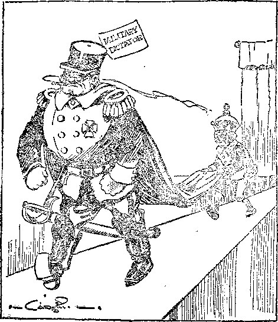

THE GLORIES OF DAWN
WORLD-WIDE PEACE
IS IT POSSIBLE?
PSYCHO-ANALYSIS ANALYZED
WHY THE PRESS
WON’T PUBLISH THE TRUTH
Vol. VIII Bi-Weekly No. 183
December 1, 1926
OLD ’WORLD DYING
Keep and Courage
5$ a copy — $ 100 a Year Canada and Foreign Countries $ 1.50
NEW
WORLD’S BEGINNING
_^;jjzrS====z=^-^=== ~^======—
Labor and Economics The Would and its News ............. .
Senator Shipstead and the Living Wage
Social and Educational
Professor Fisher’s Findings-on Prohibition ......... 139
A New Method of Fighting Forest Fires
Finance—Commerce—Transportation
Mr. Hinman's Trip Through Georgia
Holland’s Conquest of the Zuyder Zee
Operating Trains by the Human Voice
OFFICERS OF THE S. S. “BREMEN” VINDICATED
Political—Domestic and Foreign
Alphonso EScaped a Prison Cell
i Is America Preparing Brazil for War? ...
Great Rejoicing at Friedrichshaven
1 German Borrowings Exceed Payments ......... .
Vienna Makes Stringent Deportment Laws
Travel and Miscellany The Airway in Western Australia ....
Appreciating the Glories of Dawn ...
Religion and Philosophy Psycho-Analysis Analyzed ...
Is World-Wide Peace Possible? When?
Why the Press Does Not Publish the Truth
A Prophecy Now Being Fulfilled
Little Studies for Little People
Studies in “The Harp of God” ...
Published every other Wednesday at 18 Concord Street, Brooklyn, N. Y., U. S. A bv S WOOD WORTH, HUDGINGS & MARTIN
I ' Copartners and Proprietors Address; 18 Concord Street. Brooklyn, N. y., U.S.A.
I - CLAYTON J. WOODWORTH . . . Editor ROBERT J. MARTIN . Business Manager
WM. ff. HUDGINGS . . Sec’y and Treas.
ii Five Cents a Copt—$1.00 a Year Mike Remittances to THE GOLDEN AGE
5 Notice to Subscribers: We do not, as a rule, send a card of acknowledgment for a
p renewal or for a new subscription. A renewal blank (carrying notice of expiration)
j will be sent with the journal one month before the subscription expires. Change of
j address, when requested, may be expected to appear on address label within one month.
5 Foreign Offices : British ..... 34 Craven Terrace, Lancaster Gate, London W. 2
Canadian ......... 38-40 Irwin Avenue, Toronto, Ontario Australasian ....... 49o Collins Street, Melbourne, Australia South African ...... 6 Lelie Street, Cape Town, South Africa
, Entered as second-class matter at Brooklyn, N. Y., under the Act of March 3, ISIS!
Volume VIII Brooklyn, N.Y., Wednesday, December 1, 1926 Number 188
Psycho-Analysis Analyzed By O. L. Bosenkrans, Jr.
THE writer premises that he considers Psycho-Analysis an admixture of truth and error. If, in his endeavor to confute some of its errors, he has mistaken the one for the other, his apology must be an admitted lack of superabundant knowledge of the subject, together with the limitations of his brain. The subject is so comprehensive, the authorities so numerous, and the literature so extensive that naturally none but a specialist is competent to do it justice. But a specialist would try to convert the reader, thereby counteracting the purpose of this examination. We hope, then, that the reader will excuse what may be the presumption of ignorance, nor deprecate this satire as unfair; it is intended as a deodorizer.
The older schools of psychology concerned themselves chiefly with the tabulation of mental manifestations rather than with their promptings. Eventually the dictum was established that our minds are dual in their activity, comprising objective and subjective spheres. The latter, being the more mysterious, stimulated particularly the curiosity of investigators. It was conceived of as virtually a separate entity from our conscious selves, quite irresponsible and devoid of principle or loyalty to the ego, yet possessed of such incalculable potentialities that it must be rigorously kept in subjection by its master, the objective mind, lest alien, hostile influences transform it into a foe within.
Hypnotism—Auto-Suggestion-—Mental Science
HUMANITY,- having outgrown warlocks and water-sprites, was becoming too matter-of-fact and required revitalization ; so hypnotism and auto-suggestion were introduced to the world to start new vibrations of anxiety. On this foundation w’as erected the modernly popular wlll-to-power science of mental-culture, which is rooted in oriental pantheism and traces its genealogy back to the original esoteric philosophy common to the inner circles of the pagan priesthood of Babylon, Egypt, and Greece. Mental science proved captivating to both mediocre animalistic minds and victims of nerve tyranny. It justified the first in their aggressive selfishness, and promised the latter release from their discomfort.
Indirectly mental science committed the world to a new code of ethics, whereby to confess a weak will became the unpardonable sin. This code became an integral factor' in human interrelations. Mental science, however, proved inadequate to explain the baffling complexities of human nature; hence psychiatrists found it unavailable as a therapeutic agency. So they abjured occultism, and through independent research formulated a new system based primarily on the examination of unbalanced minds. Their conclusions differed materially from the will-culturists; psycho-analysts assert that our mental make-up is predetermined by pre-natal and infantile experiences and cannot be appreciably remodeled by any deliberate exercise of the will in adult life. So the program of occultism was partly frustrated; the house was somewhat divided against itself.
Following their Eastern preceptors, the various schools of mental culture had proclaimed that personal salvation was self-achieved—there was no requirement for Advocate or Mediator, but an imperative necessity for developing our wills. Since life is brief and filled with uncertainties, will-culture does not restrict itself to temporal salvation but presumes to determine also the personal status after death. Hell, here and hereafter, must be the abode of the weak-of-will. .
A Do-As-You-Please Philosophy
THE psycho-analysts, however, pooh-poohed the foregoing assumption of the will-cul-turists; yet in the sequel their goals are found to be identical, though differently attained. Success and happiness, they both aver, lie in the complete expression of self “translated into social values”. To speak more succinctly, selfishness is “sublimated” into public service. But we are not indebted to either of these schools for the origin of this observation; for Volney ad- • vanced the same idea back in the eighteenth century.
. 131
A modern example might be furnished by any eminent inventor who, for self-glorification, contributes to the comfort of his fellow creatures. This is the doctrine of the New Individualism, or do-as-you-please philosophy, which trusts to destiny to inscribe your personal strivings on the credit column of public benefactions.
This self-assertive instinct, we are informed, is the backbone of “character” and the motivepower of success. It is a much-snubbed propensity in our industrially-organized society, whose bogey is anarchy. Civilization is infested with damaged goods—egoes whose self-assertiveness suffered permanent impairment in ehildhood through family discipline. Solomon Was unfamiliar with psycho-analysis or he would have never handed down that misleading precept about sparing the rod. Some of its victims, powerless to reconcile the internal conflict between instinctive impulses and artificially-imposed conscious ideals, develop a “religious complex”—ah, super-tragedy! dooming their w’hole lives to futile and purposeless struggling with the conscience obsession!
The implication is that piety is incompatible with the “will-to-live”. Instead of exerting wholesome self-assertion, the pious yield to. morbid self-abasement, the “protective impulse of a -whipped dog”, -which lowers blood pressure and slows the heart beat, predisposing to a negative attitude toward life in maturity, to an incorrigible sense of failure. In effect, piety is identified with neurosis; the cowed child grows up into the Puritan.
Well, our pioneer ancestors resorted to their parental privileges to an extent we would deem immoderate, yet their progeny subdued the wil-demess and laid the foundations for an empire. Their religious Complexes were open and manifest, and they carried their muskets to meeting house to discourage unseemly interruptions by the red man. History absolves them from abnormal timorousness or incompetency.
A Glorification of Selfishness
IGNORING historical data, the psycho-analysts say that since only one instinct ought to be allowed to dominate the ego at a time, when in doubt give the right of way to self-assertion (selfishness). In other words, high-ball it through; show the house cat, at least, who is ■boss. Meekness is anathema; it reveals the type of men immortalized by Barnum's proverb. Shun humbleness; for it is at best a species of self-deception, an “over-compensation”, camouflaging hidden batteries of soul-rebellion. Ideas are prone to impersonate their opposites in the subconscious; the meek soul is a parricide at heart, too cowardly to submit to self-examination. Avoid superlative goodness; it is'’a snare! Little angel face, you are incurring the gravest risk of amounting to, very small potatoes, not to mention an untimely demise. Supporters of reform tickets do not carve the political pies, customarily. .
To the query, Does not all this emphasis placed on self-assertion prejudice social stability? The psycho-analyst replies: “Oh, no! not necessarily: since our inherent 'herd complex’ regulates and minimizes inordinate self-assertion.” The desire of the individual for “herd approval” precludes too flagrant trespassing on his neighbors’ claim-stakes. The ideal is embodied in that ancient worldly philosophy: Seek to be “highly esteemed among men”; remain “in good standing” among your associates; be careful not to offend the popular code. This guarantees protection to society from over-ambitious members who might otherwise climb bodily into the-trough and try to monopolize it. Truly an estimable quality this “herd complex”, the lack of which must have seriously handicapped the first pair in Eden.
Are vre to infer from the admonition to vigorously assert ourselves that. selfishness is a consummate virtue? Alas! my benighted brother; too long have our honest, instructive impulses been libeled and thwarted by the deplorable moralistic fallacy that our animal nature is base and despicable; whereas to the enlightened understanding it is really nobler and more ethical than those superimposed moral laws which hamper its untrammeled expression.
Those acquisitive and coprophiliac propensities, inherited doubtless from remote pre-Simian
ancestors who poked their long snouts into this Psycho Analysis as a Religion and a Cure
and that, should not evoke disgust and condemnation; but should be recognized as more truly exalting than false, arbitrary ideals, such as aesthetic admiration for a sunset, and the like. After all, can one eat a sunset? Ah, those gloomy apostles ! How inferior were the standards which they imposed on the world to those of glorious pagan antiquity, with its thyrsus, its lotus and its priapic gods!
Zs Sex the Goal of Existence? .
Do we understand, then, that sex is the goal of existence, the sum of human effort ? The psycho-analyst answers, “Yes, but not in a sense implying sensuality. We venerate sex in its relation to posterity. Nature’s goal is the creation of the child; wherefore the pursuit of happiness lies neither in sex nor in marriage, for their own sake, but in the home. Unbridled hetero-sex-uality is but a cheating of the Imago, who hovers yearningly above the cradle.” Indeed, though masquerading as a scientific euphemism, we discern truth here, and gladly acknowledge it.
Whether, deliberately or not, each son of Eve seeks a materialization of the love image in his heart, longing to revive within the holy precincts of a new home the cherished glamour of his own childhood. But on the other hand, unless fathers nurse their girl babies, why should they impress the latter with a love image ? Methinks an inconsistency lurks here. Truth and error-are cunningly interwoven in the psycho-analyst web, lest the pattern prove undisguisably ugly.
In a general rvay, we are to suppose that happiness is intimately involved with domesticity; in spite of inherited pointed-ear proclivities that tempt some men away into lives of singleblessedness and adventure. Herein a marked distinction is afforded between the older schools of mental science and psycho-analysis. The former counseled us to lift ourselves up, and ever upward through the seven heavens, by our boot-straps; while the latter bids us rest content with a temporal salvation. Nevertheless, man is mortal and exposed to perpetual hazard; and woman, moreover, in many individual cases, is in current civilization defrauded by her very numerical superabundance from achieving this goal. Must the surplus reconcile itself to eternal unfulfilment of its dream?
IS IT not a defect of this pseudo-religion that it makes no provision for an ultimate righting of wrongs'? But the ardent advocate retorts: “This, sir, is a hasty assumption, not warranted by our philosophy; there exists no insuperable obstacle to a heavenly reward of some sort, since the unconscious mind reveals that its great dynamic wish is for personal power and immortality. .
“We must, of course, concede that not a shred of actual scientific evidence has turned up in support of this; in candor we are obliged to acknowledge that exhaustive tests have, so far, demonstrated nothing tangible; but we infer that man must have a soul from the phenomenon that the unconscious mind has no record of personal death, acting always on the assumption of an infinite sequence of tomorrows.” Its goal of omnipotence and immortality is the wish to be a god.
As a therapeutic agency, too, psycho-analysis is a failure, unless it takes cognizance of the immortality dogma; for no cure is possible unless the patient subscribes to it. We recall that the initial human imperfection was endangered by this very temptation toward omnipotence and immortality.
In the Eleusinian Mysteries a basket was carried, containing in a casket a phallus, an egg and a serpent. The first two symbolized fire and water, the active and passive procreative principles; while the latter represented the Great Destroyer who perpetuates life by eternally renewing it. The serpent symbolizes his mystic power of regeneration by periodically casting his skin. The picture coincides with the psycho-analyst philosophy, and it is obvious who is the Galen of this school of therapeutics!
At any rate psycho-analysis has proved nothing by its argument except,, perhaps, that the minute plant-lice have immortal souls! But we esteem it a corroboration of divine mercy that cattle be allowed to browse on, oblivious to the butcher; and that like theirs, our instinctive animal mind (if we have one) should be unaware of death. Our psychic engineer should not be perpetually reminded that machinery wears out, lest he grow discouraged.
''Like the Roman Confessional
pSYCHO-ANALYSTS pretend to be at variance with New Thought, .but the two systems have standardized interchangeable pasts. Will-culture is impotent to release you from the thrall of "complex” and “repression”, so your ego must search for other egress. The remedy, of course, is to consult a psycho-analysis specialist, who (for a consideration) will direct his flashlight into obscure corners of your mind, and drag out long-forgotten, unclean memories for laboratory research work. He will interpret the mystic symbolism of your chaotic dreams, rousing chaste blushes at recollection of inadvertent “exhibitionism” when at some past time you flaunted your bare foot before the public gaze. Gently he will inveigle you into confession of the more shameful episodes of your early experience, habitually stifled by the “censor”, lest you walk abashed in crowds.
You are told that you are a neurotic, an exaggerated human being; that your sole chance for recovery from this pestiferous ultra-humanness is to permit the triumphant emergence of your repressed animality into your consciousness. It resents being snubbed, so it pounds vociferously on the parlor door. Make it welcome, and it will then retire unobtrusively into a corner; though in practice, we suspect, it will muddy the carpet somewhat; and your “censor” will become a balked housekeeper, deprived of her mop and duster.
Perhaps the most cherished dogma of the psycho-analyst is the CEdipus myth, according to which practically every son harbors subconsciously incestuous passion for his mother, and every daughter for her father. This “clarifies” sundry freaks of behavior, explaining filial hatred and jealousy of the opposite parent! We trust some misconception lingers here; if not, it almost seems as if ignorance were preferable to enlightenment, and a pity that the sapient investigators ever acquainted the public with their discoveries, so that humanity might retain its immemorial illusions concerning parental affection and filial duty. Surely the disclosure that parental love is a species of unconfessed eroticism poisons the well-springs of mutual respect and esteem within the family circle; the austere countenances of Lares and Penates are Suffused with shame, when luring lust creeps to the hearthstone.
Undermining the Dignity of Life
X INSTRUCTING- the public to ascribe all motives to sex, the purity of human interrelations is vitiated; the old moral dignity of life infracted. A confusion of ethical values is instilled whereby sex-delinquency ceases to be more than a venial offense; pubescent pruriency is encouraged, and social decorum violated by free discussion between the sexes of erstwhile tabooed themes. The barroom and the bavcdy-house left unsmirched the garments of racial ideality, because the latter did not frequent these resorts; but the nomenclature of psycho-analysis sanctifies lewd speaking in the classroom.
Innocence is no longer valid when we are asked to believe that even the cooing infant in its perambulator is preoccupied in ministering to its inborn erotic cravings; but these, the psycho-analyst gravely explains, are not yet specifically localized into the zones of maturity. Wherefore mitigate your astonishment at the doctrine that the baby admiring its little toes is indulging in a form of subconscious sex-gratification, “'narcissism”! Surely in a world incorrigibly irreverent concerning sex, to suggest cynicism in this relation concerning immaturity is to add more fuel to the smouldering fires of Armageddon!
Ambi-sexuality is another evil propensity hidden in the dark chambers of our subconsciousness, according to the psycho-analysts; but I fail to coincide with them in identifying it as a basic primeval instinct. We fallen creatures are universally susceptible to the whispers of invisible malignancy, whether or not we have “clairaudient ears”. An implicit reliance on traditional morality is a safeguard, but these latter-day monitors undermine even this defense by egging us on to flout the inhibitions of our conscious moral “censor”. They condone this introductory phase of moral laxity, because in the majority of cases it is supposed to restore marital prowess by neutralizing our stultifying “repressions”.
The mind having dismissed its gate-keeper, a motley throng of undesirable visitors gain entrance, obstreperously announcing themselves blood-relatives. But the adroit P. A. practitioner calms your agitation; explaining that everything is perfectly proper, that your horror of these reprobate impulses is no more than an “anxiety” obsession, a symptom of neurosis. The insidious idea is thus implanted that sin is a phantasy imposed by the moral censor to keep within bounds primordial instincts long outlawed by civilization.
'Explaining Away Sin and Disease
IN RADICAL disagreement with Christian Science, psycho-analysis indorses mind-cure solely for nervous ailments, disclaiming its efficacy with regard to_ organic diseases. However, the divergency becomes less apparent when it is considered that the psycho-analysts’ field of effort is the subconscious; and the latter is supposed to control our involuntary physical functions, such as circulation, respiration, digestion, etc.
Subtly reminiscent of Mrs. Eddy’s “Science and Health” is the following by a feminine exponent of psycho-analysis: “Absurd as it sounds, ‘nerves’ turn out to be a question of morals; a neurosis, an affair of conscience; a nervous symptom, an unsettled ethical struggle.” Sin, declared Mrs. Eddy, is ill health. And it has been alleged by certain of her detractors that she herself was not the originator of her doctrine; but coolly appropriated, without acknowledging the debt, a system devised by a specialist in nervous diseases, who was also an Orientalist, for use in his practice. The subconscious is quite amenable to suggestion; nevertheless even in a state of hypnosis it appears to rebel at such a command as, “You are a sausage; eat yourself” I
Psycho-Analysis, like every other mind-healing cult which has come under our notice, has established no free clinics. It follows that pio-longed and difficult cases are not to be shunned as an unalloyed nuisance. Cures are not guaranteed. Some patients, from lack of confidence in the practitioner, or being too diffident to un-bosom themselves unreservedly of those thoughts and memories which the average person habitually covers up, stubbornly resist treatment. Among such unsatisfactory cases are some who have been guilty of the most monstrous ingratitude, accusing the practitioners of fraud and charlatanism! Some erstwhile advocates, who are themselves regular physicians, have since written books purporting to expose the science as a tissue of falsehoods and misconceptions.
Staple Reliance of the Practitioner
ONE staple reliance of the psycho-analyst practitioner is a presumed, almost universal, chafing of adult human beings against sex-deficiency; the inference being that happiness is centered here and is otherwise unobtainable, unless through “sublimation”. Our suspicion is that in this connection a concomitant of decadent society has been extended beyond its proper sphere. Our congested, artificial urban habits of life do not represent normalcy. Nature’s effort today in emphasizing sex-deficiency may be directed to counterbalance over-population. A degenerate race may be approaching that stage forewarned of by Pastor Russell, where it may be no longer able to transmit the spark of life.
A consequence is preternatural personal solicitude in respect to this, which reflects itself in aphrodisiacal advertisements and phobias of sex perversion. An eminent psycho-analyst pronounces all mankind to be “sex insane”, and proves his case to the reader’s satisfaction. Still, we are inclined to modify this opinion where sober-minded citizens are concerned, preoccupied with business, family cares and gathering infirmities. Only pubescents and the salacious-minded are perpetually reading covert improprieties between the lines of ordinary behavior.
Howbeit, as in Caesar’s day, when neighborly intuition seeks with mutual avidity for the hidden vice it is an infallible symptom of social rottenness. If mankind is really “sex insane” in our generation, it indicates abnormalcy—a condition approximating senility. Normalcy takes sex-sufficiency for granted; decrepitude builds up “compensation” (to use their own terms), by parading its own pretended virility and denouncing the inadequacy in its neighbor.
Parallelling the Degenerate Roman World
UR age parallels the degenerate Roman world in many features. Like that, we are submerging our racial ideals in Oriental mysticism; but—to again borrow a word from psychoanalysts—we “rationalize” it, making it attire itself in vesture more suitable to our matter-of-factness, substituting in lieu of Mahatma and Buddhisattva scientific parlance. It must acquire a Protean faculty of accommodating itself in one place to militant feminism, in another to biology and therapeutics. As a therapeutic agency it receives a cordial welcome from a nervously unstrung generation, unable to adapt their physical organism to the keyed-up, unnatural mode of existence demanded by the age of gasoline and electricity.
Some of our worst maladies, according to these mind physicians, are attributable to our nefarious “repressions”. They point out that when you block or suppress an impulse you but divert it into unforeseen channels of activity; you cannot obliterate it; it reappears disguised as anger, jealousy, or hypochondria. The assumption here seems to be that all men are by nature created free and equal providing that their animal impulses are given free rein in early life; but civilization is hostile to the “libido”, imposing arbitrary rules and restrictions. The defects of civilization are supposed to arise from a Zoroastrian conflict between primitive instincts and racial ideals. The Jukes family is left out of the discussion.
The subconscious mind, we are told, is the realm of our primal instincts. Its storehouse of old memories comprehends uncounted generations, stretching back into post-glacial times. Reprehend not too harshly little Johnny for "tin-canning” Fido, or his little sister for snapping a clothes pin onto her own stub nose; these "sadist” and “masochistic” traits serve to exemplify the recrudescence of a waddy-club wooing inheritance. Victorian prudery has been responsible for much ignorant groping in wrong directions by children.
You have been puzzled by Miss Blond’s inordinate partiality for quinine? We discern in this idiosyncrasy a "drug compulsion”, a subconscious reassertion of infantile curiosity. Perhaps the teaching of sex hygiene would have obviated this trouble. Probably the misplaced affection of some middle-aged ladies for their lap-dogs signifies subconscious yearning for the "snuggle-puppies” of their high-school days.
Explaining Away Humanity
HOW dimly do we apprehend our "inner selves”, according to psycho-analyst philosophy I Do not felicitate yourself, my friend, on your humanitarianism. That tenderness, evoked (as you imagine) by childish winsomeness, is but the “rationalization” of a cannibalistic or ogreish ravening for a little-girl-stew. Those periodic yieldings to fits of generosity are maudlin sprees which serve to lift you out of the soul-dwarfing daily grind by removing your “inhibitions”. It is salutary at odd moments to forget the potter’s field. And be not too positive respecting that stem practicality that you pride yourself on; while your conscious ego is concentrating on the market reports your subconscious mind is eagerly scanning the bargain sales of ruffled skirts. Its appetite is omnivorous. And unbeknown to you it has for many years been accumulating a prodigious mass of data which is of no possible use to you, personally, so far as you are able to judge.
Some aspects of psycho-analysis are so indelicate as scarcely to bear handling without longhandled tongs. Indeed the psycho-analysts themselves have been fain to invent a nomenclature unintelligible to the student without a glossary. For popular consumption the doctrine is presented in such seemly innocuous form that not even the most squeamish can take offense; but the advanced student must allow himself to be escorted into veritable latrines and cesspools of these mind analysts. Here he imbibes the valuable knowledge that infantile eroticism, improperly trained, crystallizes itself in unmentionable vagaries.
Antiquity accepted “inversion” as an institution, and glorified it. We outlaw it. Hence, our “natural” instincts undergo “transference”, resulting in coldness and asperity in inter-masculine relations, but affect exaggerated homage for the opposite sex. Hence, likewise, the latter-day fascination of “boyish” maidenhood. Do the revised interpretations of ancient iniquity ignore Lot’s wife?
Van Teslaar defines psycho-analysis as psychology herded into the evolutionist fold. AU the other sciences had jointed-up and taken the pledge, except old-fogey atomistic psychology, which clung dotingly to its ossifications; until Freud, with his revolutionary hypotheses, appeared as the Sakyamuni of mental science.
However, in spite of Freud’s great reputation among them, not all the leading authorities accept his views in their entirety. Adler declines to subscribe to the theorem that sex constitutes the basic purpose of individual development, himself substituting, but somewhat indefinitely, “purposiveness”. Dr. Emanuel takes the heterodox standpoint that consciousness of guilt is not; rdoted in the CEdipus complex, but in distaste for work..
Repudiation of the Bible
WHETHER Dr. Ludwig Levy was a pensionary of the German captains-of-in-dustry, we cannot say; hut he endorses enthusiastically the “sweat of face” as the great panacea, the “only lasting satisfaction in life”. The worker who harbors fears of “hurting himself” and “stalls” on the job is effecting a subconscious “transference” of his dread of the effects of onanism. Both are neurotic phobias, equally fallacious!
The Jewish religion, Dr. Levy opines, represented a Puritanical reaction against the sexual orgies into which the older idolatries had degenerated. “Very characteristic of the author of Genesis,” he remarks, “is the divine punishment for sinful transgression, which is work.” Work thus “becomes a burden, an evil”. Evidently he embraces the common error which ascribes the fall of man to sexual temptation. In their anxiety to confute the Scriptures men of science frequently betray their own egregious ignorance of its texts.
Jung also takes issue with Freud on some important dogmas, but concurs with his colleagues in tacit repudiation of the Bible. He avers that the “rationalism of modern life has driven the irrational into the subconscious”; that the will to live, regardless of logical considerations, bears a certain analogy to religious faith, which requires the implicit acceptance of some opinion or other; and infers that the fall of man symbolizes our life-denying tendencies, such as “humbleness”.
“The God of the Old Testament stands above all as the strict disciplinarian, the representative of the principle “Thou shalt not’, in contrast to Christ, the representative of the principle ‘Thou shalt love’,” we are told. This bold dissociation of the Son from the Father as two incarnate but irreconcilable principles, is a favorite concept of the New Religionists who strive assiduously to champion the false Messiah. Neither is there anything in the four Gospels to warrant identifying the love enjoined there as eroticism.
Ferenczi, another apostle of psycho-analysis, likewise gives us a hint that his confidence in the ancient Book is very slight, when he refers to humanity’s undying longing to rehabilitate childhood’s paradise as the veritable golden age, “which poets project from the past into the future.” Is it not more probable that our fleeting Edenic reminiscences are in a sense antitypical, serving, like maternity, to remind us that other laws will prevail in a reorganized, purified world than spiritual Nietzscheism, and that the loftiest dreams of our race were not mere phantasies?
Psycho-analyst authorities admit telepathic suggestion as being a factor of the mind that cannot be ignored, yet their explanation of the phenomenon is not altogether clarifying. Whether these alien, interloping thoughts represent mental telegraphy, demoniac suggestion or subconscious reactions is a matter for the reader to ponder over and for subsequent development to demonstrate.
Conclusion
WE CONCEDE that psycho-analysis embodies certain fundamental truths, but maintain that these truths have been artfully blended with errors, arising from misconceptions concerning unfathomed laws of nature. It cannot be gainsaid that the reproductive urge pervades in a sense the complete psychological history of the individual. Infancy is a preparation for the procreative life; old age, a regretful relinquishment; but sexuality is by no means the whole of human life.
Even psycho-analysts recommend as necessary the diversion of surplus sexual impulse into channels of “sublimation”. This is defined as a “switching over of our surplus energy into socially valuable work”. It is recognized that the love instinct, unlike its nutritive competitor, possesses unique potentialities for constructive creative effort. We witness sublimation in the manifold activities of human life where sex is not conspicuous. The actor sublimates his “exhibitionist” impulses; the cruel boy becomes the surgeon in maturity; the curator’s enthusiasm is but transcended sexual curiosity.
Says C. A. Coe: “Society’s great task is the understanding of the life-force, its manifest efforts at expression and the way of attaining this, and to provide as free and expansive ways as possible for the creative energy which is to work marvelous things for the future.” Noble, soul-stirring words—if it were truly feasible to avert the impending cataclysm into which civilization is rushing headlong, and to perpetuate our man-made millennium for an indefinite term ; of cycles!
But events are moving swiftly toward a consummation. Secure as we feel ourselves to be, bulwarked by concrete and steel, ready ; though men be to abjure revealed religion and ' the ethical code of our forefathers, and to hail psycho-analysis as the great illuminator which teaches them how to expend their surplus “libido” in altruistic endeavor—all this nevertheless will prove futile to halt the whirlwind’s progress. The wisdom of our wise men shall perish with the existing order of things.
Where Sex Will Eventually End
WE CANNOT but entertain a suspicion that this modern trend to reduce all motives to sex-basis correlates progressive sex-apathy. As sex-propinquity cools under feministic onslaught, the professors artificially essay to revive it. But the race has damned sex in this age by an unholy traffic with forbidden knowledge, by permitting it in a special sense to become an instrument of diabolism. Since seximpulse is an integral factor in our make-up, must we argue sterility and torpor, a vegetative existence in the hereafter, because procreation shall have become superfluous ?
We can only guess that in the coming days those age-old, fundamental impulses will not atrophy but will become “sublimated” by mankind into altruism in its broadest sense. The loftier mutual affection among human beings will itself merge into parental, filial, fraternal, connubial—every manifestation of love—into a profounder, more satisfying sentiment than anything now conceivable. All humanity, except the incorrigible who are to be destroyed, will come into harmony with the eternal laws of the universe, and. will enjoy life in its fullness, in peace and righteousness forever.
Glossary of Unfamiliar Terms
Ambi-sexuality, the state of being distinguished by both sexes, Anathema, forljidden, proscribed.
Aphrodisiacal, stimulating sexual appetite.
Buddhisattva, supreme wisdom a la Buddha, theosophy. Charlatanism, quackery.
Coprophiliac, loving filth.
Eleusinian Mysteries, secret religious rites practiced by the Greeks.
Eroticism, unnatural sexual appetite.
Esoteric, secret, confidential.
Galen, famous Greek physician, living 200 B. C.
Hetero-sexuality, depraved feeling toward the opposite sex. Hypochondria, morbid melancholy.
Imago, adult, sexually matured.
Inversion, reversal of the natural sex order.
Libido, sexual desire.
Lotus, indolent enjoyment.
Masochistic, sexually perverted and willing to be treated cruelly along with it.
Neurosis, a disease of the nerves.
Neurotic, afflicted with nervous disease.
Oedipus, A Greek king who unknowingly married his own mother.
Onanism, Genesis 38: 9.
Pantheism, the doctrine that everything, conceived of as a whole, is God.
Parricide, murderer of ancestors or offspring.
Phallus, figure of male generative organ used as a symbol. Phobias, morbid fears.
Priapic, fruitful and sensual.
Propinquity, local nearness.
Protean, playing different parts.
Pruriency, lascivious curiosity.
Psychology, science of the human mind.
Sadist, sexually perverted and cruel along with it, Sakyamuni, the family name of Buddha.
Salacious, lustful.
Sapient, possessing deep wisdom (often used ironically). Thyrsus, the Bacchic wand, a staff wreathed in ivy and Sublimated, refined, etherealized.
vine leaves.
Waddy-club, a thick club used by uncivilized, primitive people. Warlock, a sprite, imp.
The World and Its News
Heists are Still Unduly High
There has been a drop of nearly six percent A in rents since July, 1924, but they are still unduly high as compared with the average price of 404 commodities compiled by the Bureau of Labor Statistics of the U. S. Department of Labor. The, average price of those commodities for August, 1926, was 149.2% as compared with the prices prevailing in 1913. The average rents of small apartments and such quarters as are usually occupied by workers are 175% higher than were the rents of the same quarters the year the war started. This is too big a difference.
Wage Hates of Common Labor
THE Department of Labor, Bureau of Labor
Statistics, has issued a bulletin giving statistics of labor conditions throughout the country. The average hourly wage of common laborers on July 1st., 1926, was 42.8 cents, ranging from 33.6 cents, in sawmills, to 47.9 cents in the petroleum refining industry. In Chicago the hourly wages of bus drivers vary from 42.9 cents to 87.5. There is a similar wide variation of bus drivers’ wages in New York City.
Senator Shipstead and the Living Wage
IN AN address at Duluth, United States Senator Shipstead ridiculed the slogan of “a living wage”, which seems to suggest that a mere living is sufficient. He pointed out that a horse gets a living wage, and in addition is fed all winter, so that he can work again in the spring; that a laborer-is paid only when he works, and must be paid enough so that he can feed himself out of his savings when he is unemployed.
Natural Soaps of the West
THE West has two natural soaps, one of which is the seed of a plant, and works up into a quite satisfactory lather. The other is a white rock scientifically known as amargosite, which is now being mined near Death Valley, California. The Indians have used both of these soaps from time immemorial.
Automobiles Continue to Kill
A LITTLE rvhile ago it was reported that there was a slight falling off in the number of persons killed by automobiles, and all began to take courage for the future; but the latest figures are that the killings in 1926 will probably show an increase from 17.9 persons to about 18.9 persons per 100,000 of population. Camden is now the most dangerous city. Chicago is only half as bad, and New York only 40% as bad. Norfolk is the safest city of all.
War in the Holy City
A LITTLE while ago Chicago was dubbed the
Holy City, but since Mr. Bonzano went home it has fallen back into its old ways. ' In a suburb called Cicero . a noted bootlegger was about to open a new saloon in a territory controlled by another crowd. Accordingly thirty gunmen raced through the street past his saloon, firing machine guns at the saloon as they passed. One of the cars carrying the gunmen belonged to the Chicago police department. Two innocent bystanders were shot, but the bootlegger who was opening the new saloon escaped unhurt.
Prof. Fisher’s Findings on Prohibition
Processor Irving Fisher, in a new book entitled “Prohibition at Its Worst”, presents elaborate statistics to show that “'the flow of alcohol down human throats in the United States is at present certainly less than sixteen percent, probably less than ten percent, and possibly less than five percent of pre-prohibition consumption”. Professor Fisher’s statistics were gathered from the police departments of 626 cities and towns.
Mr. Hinman’s Trip Through Georgia
Me. George W. Hinman is always interesting.
He has recently been making a trip through Georgia. The state is prospering but it needs more capital and just now is wondering why $15,000,000 of American money are sent to Germany to finance German farmers when so many Georgia farmers need help; why $25,000,000 of American money are sent to Congo to develop cotton fields that will displace Georgia cotton fields; and why other millions have gone to Europe to finance the European steel trust, when Georgia has manufacturing industries that could have used it all.
The Sukkar Barrage in India
AT A point on the Indus River near Sukkar
American excavators of mammoth proportions are constructing a dam and water system which will provide more reclaimed land than the cultivable areas of Upper and Lower Egypt combined. The dams are constructed of stone sawn by the latest types of stone sawing machinery. They vary in weight from five to twenty-five tons. These excavators scoop up at a single dip the equivalent of five ordinary wagon loads.
The Airway in Western Australia
FROM north to south along the whole western coast of Australia, Derby to Perth inclusive, there has been maintained for several years an air service that has worked splendidly. Some 20,000 letters .are transported every month, besides passengers and a quantity of perishable freight. Many doctors and patients have been carried. Stops are made at the important towns. The longest non-stop flight in the route is 310 miles. The total mileage flown is over 600,000.
A Radio Hero in Miami
A LMOST immediately after the great storm that devastated the regions about Miami, an amateur radio broadcasting station, operated by J. Y. Haisch, succeeded in making radio contact with Jacksonville; and in the next twentyeight hours it handled hundreds of messages. After a half hour’s rest Mr. Haisch was back on the job again. It is believed that his efforts saved many lives.
Holland’s Conquest of the Zuyder Zee
HOLLAND has made many invasions of the ocean with her dikes, but is outdoing herself in the work now under way for the reclamation of two-thirds of the Zuyder Zee. The reclaimed portion will amount to nine hundred square miles. The dikes are already far out into the Zee, and are expected to meet in about four years. What is left of the Zee will be drained off and replaced by fresh water from the Rhine.
Operating Trains by Human Voice
THE New York Times reports a most interesting exhibition by a London inventor, in which two electric trains obeyed his commands to go, stop or back, as he desired. This was accomplished by the use of a microphone so set as to correspond to the particular pitch of his voice. The inventor is Major Raymond Phillips.
'Alphonso Escaped a Prison Cell
NEWS has just leaked out that King Alphonso narrowly escaped a prison cell. It seems that the king was actually arrested by the followers of De Rivera at the time that that notable seized the government, but was given his liberty "when he promised that he would do as De Rivera said. Had he not done so De Rivera, it is said, had determined to turn Spain into a republic, with himself as its first president. .
Russia a Good Customer
DURING the year 1925' Russia purchased from the United States $44,401,000 in cotton, $16,000,000 in machinery and $12,000,000 in flour. There were also considerable purchases of oil well supplies, chemicals, dyes, resin and nonferrous metals. The total Russian purchases during the year were $87,088,000, which, is considerable business to get from a customer that you won’t even recognize.
Is America Preparing Brazil For War?
THE Arbitrator, which is usually careful in -®- its statements, declares that since 1922 thirty-five United States naval officers have been training Brazil to prepare her navy for the next war, and that these officers are to remain for four years more at the expense of American taxpayers, in addition to the compensation received from Brazil. One can but wonder who has the authority or the right to make such uses of Uncle Sam’s funds.
Great Rejoicing at Friedrichshaven
There is great rejoicing at Friedrichshaven, J- Lake Constance, over the assurance that Spain will open in 1929 an air service between Seville and Buenos Aires, with a new airship, the L-Z-127, that will be built at that place. The Germans have never lost their confidence in the Zeppelin, though the Lake Constance plant has been virtually idle ever since the Shenandoah disaster.
German Borrowings Exceed Payments
Commerce and . finance says: “To date German borrowings abroad have exceeded her reparation payments, which can scarcely have failed to grease the exchanges and make easier her transfers.” To reduce the foregoing to the plain facts, American financiers are buying up German industries, and if it were not for this buying Germany could not pay what she is paying and required to pay.
A New Method of Fighting Forest Fires
ANEW method of fighting forest fires has been discovered in France which gives promise of being of great value. It has been learned that a certain species of acacia tree is almost unburnable. The plan is to divide the forests into squares, separated by rows of these acacia trees, closely set together. It is believed that this may mean the solution of the forest fire problem. At any rate it seems a plan well worth trying.
Vienna Makes Stringent Deportment Laws
VIENNA has enacted some deportment laws which seem stringent and yet good withal.
Persons must not sing, whistle or talk too loudly on the streets; they must not impede pedestrian traffic by reading while walking; they must not carry excessively large packages; they must not use unseemly language, and they must not stop to converse in the middle of the street.
A Radio Expert’s Prophecy
Hugo Gernsbach, editor of Radio News and of Science and Invention, in a recent speech over the radio said:
Fifty years hence all of our crops will be grown under glass by electric cultivation, and instead of reaping once a year, we shall have four crops. We shall have glass-covered farms, stretching for hundreds of miles into the distance, with double glass walls to keep the heat during the night. These will be artificially heated by cheap power, and electrically stimulated.
Mr. Gernsbach sees future plowing, sowing, watering and harvesting all done electrically.
Radio Programs
[Station WBBB, Staten Island, New York City.—416.4 meters.]
Sunday Morning, December 12
10: 00 Watchtower Concert Orchestra.
10:25 Fred Twarosehk, tenor.
10:40 Bible Lecture—Judge Rutherford.
11:10 Fred Twarosehk, tenor.
11:20 Sunday School Lesson, “The Boy
—W. N. Woodworth:
11: 35 Fred Twarosehk, tenor.
11: 45 Watchtower Concert Orchestra.
Samuel”
Sunday Morning, December 19 10:00 Watchtower Concert Orchestra.
10:20 Forrest J. Kleinhans, baritone.
10:40 Bible Lecture—Judge Rutherford. ■
11:10 Forrest J. Kleinhans, baritone.
11:20 Sunday School Lesson, “Samuel the Just Judge”
—F. W. Franz.
11: 40 Watchtower Concert Orchestra.
Sunday Afternoon, December 12 2:00 Watchtower String Quartette.
2: 25 Fred Twarosehk, tenor.
2:40 Bible Lecture, “The Day of God’s Vengeance” —R. H. Barber.
3:10 Fred Twarosehk, tenor.
3: 20 Buskin Macknight, cellist.
3: 35 Bible Instruction—Martin L. Hartman,
4:00 Watchtower String Quartette.
Sunday Evening, December 12
7:00 Watchtower Violin Quartette and Organ.
7:20 Vocal Selections.
7: 35 Bible Lecture, “Ecclesiasticism an Abomination in the Lord’s Sight”—R. H. Barber.
8: 05 Vocal Selections.
8:15 Watchtower Violin Quartette and Organ.
8: 30 Bible Questions and Answers—Judge Rutherford,
Tuesday Evening, December 14
7 : 30 Rudolph Clemento, violinist.
7: 50 World News Items of General Interest '
—C. J. Woodworth.
8:10 Billie Frederick, tenor.
8: 25 Rudolph Clemento, violinist.
8: 45 Billie Frederick, tenor.
9:00 Bible Lecture, “Who Shall Live Happily Forever?” ■ —C. A. Wise.
Thursday Evening, December 16
7: 30 Piano Duets—R. K. Nunn and F, S. Barnes.
7 : 45 Stanley Gohlinghorst, baritone.
8: 00 Bible Lecture, “The Wages of Sin”—S. M. Van Sipma.
8: 30 Stanley Gohlinghorst, baritone.
8:45 R. K. .Nunn, pianist.
9: 05 Helpful Items on Health and Hygiene.
Friday Evening, December 17
7 : 30 Watchtower Concert Trio.
7: 50 Vocal Selections.
8:00 Bible Lecture, “Does God Torment Anyone?”
—Martin L. Hartman.
8:30 Joseph Bonaccorso, violinist.
8:50 Watchtower Concert Trio.
9:00 Bible Lecture, “The Dead Soon to Come Back to Earth”—W. F. Hudgings. ' Sunday Afternoon, December 19
2: 00 Watchtower Violin Quartette.
2: 20 Choral Singers.
2:35 Bible Lecture, “The Dawn of the Glorious Day” —H. P. Kleinhans.
3: 05 Forrest J. Kleinhans, baritone.
3: 20 Choral Singers.
3:30 Watchtower Violin Quartette.
.3 : 45 Bible Instruction—Eldore Bergsbaken,
4 : 05 Choral Singers.
4 :15 Watchtower Violin Quartette.
Sunday Evening, December 19
7: 00 Watchtower Concert Trio.
7: 20 Billie Frederick, tenor.
7:35 Bible Lecture, “The Reign of the King of Kings” —R. S. Emery.
8: 05 Billie Frederick, tenor.
8:15 Watchtower Concert Trio.
8: 30 Bible Questions and Answers—Judge Rutherford.
Tuesday Evening, December 21
7: 30 Professor Charles Rohner, violinist.
7: 50 Irene Kleinpeter, soprano.
8: 05 World News Items of General Interest. ■
8 : 30 Irene Kleinpeter, soprano.
8: 45 Professor Charles Rohner, violinist.
9: 00 “Listening in”—on Professor Thomas Standwell and Harry Goodwin.
Thursday Evening, December 23
7: 30 Bandura Quartette. ■
7: 45 Vocal Selections.
8: 00 Bible Lecture, “Our Christmas Tree”—H. H. Riemer.
8 : 30 Vocal Duets. ’
8: 45 Bandura Quartette.
9:00 Items on Health and Hygiene.
Friday Evening, December 24 7 : 30 Watchtower Concert Orchestra.
8: 00 Christmas Carols.
8:15 Christmas Discourse.
8: 55 Christmas Carols and Anthems, 9:15 Watchtower Concert Orchestra.
[Broadcast from Watchtower WBBR on a wave length of 413.4 meters by B. L. Beaulieu.]
PBIOB to the outbreak of the great World
War In 1914, world-wide peace seemed not only a possibility but a probability for the very near future. It was declared that settling disputes by means of war was archaic, and that we moderns had finally discovered that it was better for all concerned to settle our differences by means of arbitration. We had peace treaties and peace palaces; reciprocity was the order of the day; and pacifists were not only quite respectable but distinctly honored. The great nations were prepared for war, it is true; but these' armaments, it was declared, were merely to enforce peace. The world intended to have peace if it had to fight for at, and the sequel shows that they did have to fight for it—but then didn’t get it.
The prophets of old had foretold of an era of world-wide peace. The Christian had hoped and had prayed for it to come. Many of the world’s great leaders had industriously sought for it. The vast majority of the race wanted it, and even thought they almost had it. Everybody said "Peace, peace”—and then the greatest war of all history broke out. Other wars have followed it; armaments still increase in spite of the cry for disarmament; and there appears to be but little hope that the world will ever reach a time when war is no more. We still cry “Peace, peace”; but it is as the prophet said, we cry “peace, peace, when there is no peace. , . . We looked for peace, but no good came; and for a time of health [a time of safety], and behold trouble.”—Jeremiah 8:11,15.
Force is still king in the earth, and arbitration is only for the weak. We still have the Hague Peace Tribunal, and in addition the League of Nations and the World Court; and yet we do not have peace. Only those who find it inconvenient to fight appeal to these. When Abyssinia finds her rights encroached upon by the great nations of England and Italy, she appeals to the League of Nations because she cannot hope to gain anything by going to war with these great powers.
But when Mussolini has a little difficulty with Greece, he knows a better way to get what he wants—the time-honored method of force. So we continue to have peace treaties and new battleships, peace conferences and new wars, peace talk and warlike action. The world talks about
142 peace and disarmament while it is actually arming to the teeth, ostensibly for defense but actually for another world-wide struggle.
Practically every nation on the face of the earth, whether it be great or small, rich or poor, is crushing* its people under tax burdens grievous to be borne—in order that it may maintain an army on semi-war footing, and that it may build new battleships, which are obsolete before they are launched. The United States, one of the most peace-loving nations on earth, has led the world by reducing its army to a peacetime basis, practically for police duty only, and by scrapping a portion of its navy.
This nation has time and again suggested further disarmament on both land and sea. Its suggestions have fallen on barren ground, and only recently it has through its president found it necessary to warn the great powers of the world that if a halt is not called to the everincreasing preparations for future wars the United States will find it necessary to prepare on a scale unprecedented in the past. If the United States, with no desire for aggression, with no quarrel with anyone, is forced to thus prepare, it can at once be seen that the hope for immediate world-wide peace is an illusory one.
The history of the human race has been a record of wars and rumors of wars, aggression and insurrection, oppression and revolution. We see history repeating itself. It is no wonder then that many have now said that world-wide peace is impossible. Many now declare that war has always been and will always continue to be. They say that the stronger has always imposed his will upon the weaker, and that the law of the survival of the fittest continues to operate. Their argument seems plausible.
Man has tried for centuries to bring about a state of peace and has failed. Indeed, the facts of history demonstrate that man will always fail by his own efforts; but thank God there is a higher power which will one day operate to accomplish that which man cannot do. God declares prophetically through the Psalmist: “He maketh wars to cease unto the, end of the earth, . . Be still and know that I am God.”—Psalm 46:9,10.
World-wide peace is an impossibility so far as the efforts, of man are concerned, and for three outstanding’ reasons:
qOLDEN AQE
1. The nations are preparing for war, and history shows that when preparations are complete, near will follow.
2. The Christian denominations, to whom we should be able to look to bring about such a state of peace, have shown their incapacity.
3. There is no organization or influence in the earth which has the power to enforce peace.
Taking up the first reason why mankind through its own efforts cannot establish worldwide peace, we notice again the continued expenditures of the various nations to be “prepared”. One would think that the late World War should have taught the peoples of earth one lesson at least, and that is that preparation for war only makes war inevitable. Yet the nations do not dare to cease their preparations. Fear still controls them. Each nation fears the others, knowing full well what a well-prepared nation might do against a host of unprepared ones if it desired.
Every nation knows that our civilization is based upon selfishness, and that nations conduct themselves even as individuals do. Each man is looking out for his own interests regardless of the interests of others. Every nation does precisely the same thing. Each nation looks across its boundaries and sees its neighbor training men, launching battleships, buying airplanes, storing up munitions, etc., etc. .
Fear takes hold of its leaders, and they demand that their nation do likewise. So long as the world is selfish, just so long as we distrust one another and have good reason for so distrusting, disarmament is'an impracticability. That being the case, wars cannot be stopped by human effort or resolve. The moment that preparations are complete, history has demonstrated in countless instances that those who are prepared force that very thing for which they are prepared; and war results.
This is exactly in accord with the Bible. The prophetic statements that have been made centuries ago are being f ulfilled today. We are living in the time of the greatest trouble of all ages, foretold by our Lord Jesus and by the Prophet Daniel. Our Lord has declared that at the time of His return for the purpose of establishing His kingdom, there would be a great gathering together of nation against nation and kingdom against kingdom. He quotes Daniel, and says: “Then shall be great tribulation, such as was not since the beginning of the world to this time, no nor ever shall be [thereafter].”— Matthew 24:21.
Again speaking of this time, as recorded in Luke 21: 25, 26, Jesus declares: “Upon the earth [there shall be] distress of nations with perplexity, ... men's hearts failing them for fear, and for looking after those things which are coming; on the earth.” Notice that Jesus did not say that; they would be afraid of the things that are here] and exist, but that they would be fearful because; of things they seo coming. That is exactly the' case. Our great statesmen and political leaders believe they can handle the situation as it now is, but they look into the future with foreboding. They hope that “they can muddle through somehow”, but they are not sure. They fear and they quake; they try one scheme after another, but still the future looks black.
Remedy after remedy is tried even for present troubles, but the solution is not found. Great statesmen have even declared that if there, shall be another such war as the last one, our civilization itself would not survive it. Yet the nations continue to prepare for the next war and thus make it a. certainty. Truly they are heeding the injunction of Joel: “Proclaim ye this among the Gentiles; Prepare war, wake up the mighty men, let all the men of war draw near; let them come up: beat your plowshares into swords, and your pruninghooks into spears: let the weak say, I am strong.”
Since the fall of man from original perfection, selfishness and force have prevailed. But for God's intervention they would always prevail, until the race had exterminated itself; and the time has come for that to take place. We are living in the day of God's anger, in which He will demonstrate the incapacity of fallen man to rule himself and to bring about a state of world-wide peace and happiness. God says that He will shake the present order to its very foundations, until “everything that can be shaken shall be shaken”. Through His prophet Haggai He has given a description of the present time: “Yet once, it is a little while, and I will shake the heavens, and the earth, and the sea, and the dry land; and I will shake all nations.”—Haggai 2: 6, 7. .
It is very evidently God’s purpose to let present events take their course in order that the words of Jesus may be fulfilled: “All they that take the sword shall perish with the sword.” (Matthew 26: 52) That the above is the correct interpretation of Haggafis prophecy we are assured by the Apostle Paul, who quotes it in Hebrews 12: 26, 27, as follows: “He hath promised, saying, Yet once more I shake not the earth only, but also heaven. And this word, Yet once more, sgnifieth the removing of those things that are shaken, as of things that are made, that those things which cannot be shaken may remain.” Expressed otherwise, the apostle is stating that inasmuch as God is to shake the nations and the heaven and the earth but once only, everything that is shakable shall- be removed, that only those things which are eternal may remain.
To what is the apostle referring, however, when he says: “Those things that are shaken, as of things that are made,” talking about both the heaven and the earth? He cannot be talking about the literal heaven and the literal earth. Jehovah has stated that “heaven is my throne, and the earth is my footstool.” (Isaiah 66:1) Surely God is not going to shake His own throne nor His footstool; furthermore, we have been informed by Solomon in Ecclesiastes 1:4 that "the earth abideth forever”. It follows that the literal earth cannot be one of those things that are made which is to be removed. These passages must have a symbolic meaning.
When we recall that “the god of this world”, as the apostle Paul calls him (2 Corinthians 4:4), is Satan the Devil, and that he is ruling as a spiritual being with a mighty spiritual organization, we readily see what is meant by God when He says that He will shake the heavens rint.il they are removed. Mankind will never have peace and happiness as long as the race is harassed by such a powerful spiritual organization as Satan and his cohorts; and we can rejoice that God is even now shaking his organization to pieces in order to prepare for the new spiritual ruler, the “Prince of Peace”.
It is not very difficult to interpret the symbolism of the “earth”, because it must of necessity refer to the order of affairs upon the literal earth. This organization, social, political and ecclesiastical, based on selfishness and under the control of the master-mind Satan, is even now trembling on the brink of ruin. It is quite unnecessary to present proof of the point. AU who read (and who does not read?) the daily newspapers and the magazines of general circulation are thoroughly informed as to the precarious condition of world affairs. All realize that the world is like a tinder-box, just waiting for the match.
The symbols “sea” and “dry land” may at first seem a little more difficult of interpretation, but a little reasoning will elucidate their meaning. The literal earth is composed of the sea and the dry land; and plainly, therefore, in the symbolism two great classes of the prevailing order are thereby indicated. They are to be found in every land—those who are “solid”, stable and conservative, and those who are movable, and radical. A glance at the situation shows that both classes are being shaken, and that severely.
Not only “uneasy lies the head that wears a crown”—the great conservative classes who are in control, whether they be kings or princes or presidents or dictators, political or ecclesiastical—but likewise world-wide unrest is to be found amongst the masses, especially amongst the radical elements. Just as the sea continually beats up against the shores, continually seeking to wear them away, just so the radical elements continue to beat against the breakwaters and jetties which the stable elements of society have thrown up for protection.
Now the apostle says: “Yet once more, sig-nifieth the removing of those things that are shaken . . . that those things which cannot be shaken may remain.” The shaking shall go on until the present organization of things is completely replaced by a new order which neither the conservative nor the radical elements of today will control, for both must be removed. One element accuses the other of selfishness, and the other reiterates the same charge. They are both right. Therefore, neither conservatives nor radicals can bring about world peace; both would perpetuate present conditions. God, designing world-wide peace to rest upon secure foundations, will remove both of these classes in order to accomplish His ends.
We see, then, the truth of the first proposition, that mankind will not bring about a state of world-wide peace by his own efforts, because he continues to prepare for war; that when preparations for war are complete, war follows as the inevitable result; and God is letting present events take their course in order that the present organization (in heaven and in earth, spiritual and temporal) may be shaken to pieces in preparation for the new order which He shall establish.
Let us now notice the second reason why mankind cannot &f its own efforts establish worldwide peace. There is one great organization upon the earth toward which we should be able to look for positive effort toward this end.. There is one great organization which claims to be devoted to the interests of the “Prince of Peace” who taught His disciples to “turn the other cheek”. The organization to which I refer is, of course, that which is commonly known as the Christian church. This organized Christian church has preached peace, and its members are supposedly devoted to peace.
The church has prayed for nearly two thousand years, “Thy kingdom come, thy will be done on earth as in heaven.” Yet instead of God’s will being done on earth, and instead of Christ’s kingdom of peace being established, the whole world in 1914, under the domination of so-called Christendom or Christ’s kingdom, went to war and fought the most terrible battles of all time. The reason is that the church itself has failed to absorb the Master’s spirit, and has failed to inculcate that spirit in spite of all its pretexts of good works. Let us notice the facts.
War was declared between the several great European powers—all Christian (?) nations. Did the clergy in those countries protest to their governments, and urge their congregations and all Christians to refuse to fight? They did not. They did the very reverse. They acted as recruiting agents, and urged their flocks to fight. The German clergy got behind the Kaiser with all their influence, and the clergy in the Allied countries followed suit. Prayers without number were offered to God by the German and Austrian clergy to bless their troops; and other prayers without number were offered by the clergy of the Allied countries to the same God to bless their side. ■
The blame for the World War has time and again been laid at the door of the clergy and the so-called Christian church; and the church and its servants have had a hard time trying to sidestep the issue. It is no wonder that we cannot have peace, when the only great body of people on earth which is supposed to be devoted to the interests of peace, in the time of trial desert their ideals and resort to the Devil’s methods. Our clergy have preached peace in peace times, but in times of war they have found it inconvenient ; and they have shown their versatility by turning overnight from pacifists to preachers of war and hate. It is all right to “love your enemies” as the Master enjoined, in times of peace; but it is very inconvenient in times of war; and therefore, in times of war our clergy not only have told us it is all right to hate our enemies, but have urged us to kill them
What-is the result? The net result of the World War, as far as organized Christianity is concerned, is a distinct loss of influence not only in Christian lands but also in heathendom. Even the heathen will not have anything to do with a religion which is so inconsistent. The church is not only inconsistent on matters of peace and war, but its whole policy is one of inconsistency. For instance, it has praised the laboring man, and exalted the ideals of labor; and then refused in Detroit to allow labor leaders to occupy the pulpits to tell the people of the sufferings, the struggle and the aims of the laboring man. Even the big business directors, of the Y.M.C.A., the Young Men’s Christian Association, refused to allow a labor leader to speak in their building to their members, because it would engender “controversy”, and might have a bad effect on a money-raising campaign.
Yes, the church has lost its influence, and for good reason. It has further shown its lack of leadership and its inability to do anything constructive, by being divided into sects and denominations almost without number; and even within the denominations the Modernist-Fundamentalist fight and other controversies have divided it and have weakened its power. As a result, the Christian church today is so divided that it cannot get together to exert its influence on any matter whatsoever; and further, it has so little influence left that even if it did get together it could no longer affect world conditions.
Truly, as God has said: “I will send a famine in the land, not a famine of bread, nor a thirst for water, but of hearing the words of the Lord.” (Amos 8:11) Again, “Thus saith the Lord concerning the prophets that make my people err, that bite 'with their teeth, and cry, Peace; and he that putteth not into their mouths, they even prepare war against him: therefore night shall be unto you, that ye shall not have a vision; and it shall be dark unto you, that he shall not divine; and the sun shall go down over the prophets, and the day shall be dark over them. Then shall the seers be ashamed, and the diviners [we call them divines nowadays] confounded: yea, they shall all cover their lips; for there is no answer of God.”—Micah 3: 5-7.
God has not told the ministers to speak “peace”, except to tell about His kingdom of peace. He will establish peace in His own due time, when all mankind (including the preachers) have demonstrated conclusively that they cannot do so for themselves. Even when we go outside the Christian church to look for organizations or powers which, have influence that might bring about world peace, we find none » that are committed to that project which are able to accomplish anything.
The League of Nations is in many quarters admitted to be a failure, and many look for its complete collapse. It has so far depended on what moral influence it can exert to accomplish its ends, and it cannot go farther than that except by calling into effect the famous “Article Ten” which permits it to use the armies and navies of the constituent powers to enforce its decisions. In other words, it must use force to preserve peace! This is to be expected. If the
The Divine Right of Kings—1926
S85BTBST ® tee DAILY NEWS. HcKEESFORT, PA.
nations as individual nations are warlike, of course as a League they could not be otherwise ■—and yet they are called Christian nations, and their kings are said to rule by divine right! But there is no such thing as a Christian nation, as the New York American has pointedly shown in. the following recent editorial:
There is not a Christian Nation.
Every little while some critic of imperialism calls attention scathingly to the way so-called Christian nations dominate and exploit the so-called heathen nations.
It is just as well to face the facts. The fact is that there never has been a Christian nation in the world.
While Christianity has been found practical in rare instances among individuals, no nation has ever tried the experiment.
Every nation is founded upon force. No nation is willing to turn the other cheek.
To be sure, the influence of the Christian viewpoint is gradually increasing, but it is yet far from succeeding in rendering any nation thoroughly Christian.
In the sense that a nation is not Mohammedan or Buddhist, there may be a Christian nation; that is, it may have adopted the name as a sort of distinguishing characteristic. But, rigidly speaking, such a thing as a Christian nation has never existed.
During the war it was said that Christianity as a national policy had broken down. Mr. Chesterton aptly and wittily replied: “Christianity has not broken down. Christianity has never been tried.”
What would happen to a truly and completely Christian nation among the wolfish nations of the world is an interesting matter of speculation.
Having examined the world situation, what hope can we set forth that world-wide peace is possible of accomplishment; and when may we look for it? Let us notice again the prophecy of Haggai: “Thus saith the Lord of hosts; Yet once, it is a little while, and I will shake the heavens, and the earth, and the sea, and the dry land; and I will shake all nations, and the desire of all nations shall come.” The shaking we see taking place; and the removal, which we may expect from the Apostle Paul’s interpretation, will be a thing of the near future. Then what? Then “the desire of all nations shall come”!
"We in this country have written down in black and white just what we desire. We wrote it in our Declaration of Independence. 'We told the world that we wanted the right to three things, namely, “life, liberty and the pursuit of happiness.” It is now just one hundred and fifty years since the Declaration of Independence was signed. Under most favorable conditions we have enjoyed a measure of life and great liberties, even though in war time some of our liberties were considerably curtailed. But we are still dying, and perfect liberty is a thing of the future.
But what about the pursuit of happiness? We Americans have pursued happiness for a century and a half, and we have not found it! We continue to have sorrow and suffering. We continue to have evil, sin and death. Laws multiply upon our statute books, and yet crime continues. We build immense churches in which to preach good morals, but conditions remain unchanged. We preach peace, then send millions of the flower of the land to war, many of them never -to return. But God promises that the desire of all nations shall come! Not because we are able to bring it about but because lie wills it and will have it thus.
God tells us how peace and happiness shall be brought about: “For unto us ,a child is born, unto us a son is given, and the government shall be upon his shoulder; and his name shall be called Wonderful, Counsellor, The mighty God, The everlasting Father, The Prince of Peace. Of the increase of his government and peace there shall be no end, upon the throne of David, and upon his kingdom, to order it, and to establish it with judgment and with justice from henceforth even for ever.”—Isaiah 9:6, 7.
The -shaking mentioned by Haggai and by St. Paul, and which we now see about us, demonstrates that the time is at hand for the removal of the old heavens and earth-—the spiritual control of Satan and the temporal control of his earthly organization, be they political, ecclesiastical or social. By the same token the time is at hand for the taking up of power by Jesus, the new King. The facts demonstrate that He is here already. He is destroying the spiritual organization of Satan and substituting His own. Soon the effect will be felt in all the earth, and millions of those now living will see the full establishment of His kingdom of everlasting peace.
The greatest gift in the power of God is life. It is life that we want most. It is life that Jesus has for the race. He declares that “if I be lifted up . . . I will draw all men unto me.” (John 12: 32) “And they that hear shall live.” (John 5: 25) Bible Students therefore confidently assert that there are millions now living who will never go into the tomb, because they will live to see the full establishment of Christ’s kingdom upon the earth and shall receive everlasting life in this kingdom when God’s will shall be done. Therefore “millions now living will never die”.
They shall live and see the time when the process of making war munitions will be reversed. We see a little indication of how it will be accomplished in the scrapping of some of our battleships by Mr. Ford, and the converting of their parts to the peaceful uses of industry. Under Christ’s government this will be done on a world-wide scale. God says: “It shall come to pass in the last days, that the mountain [kingdom] of the Lord’s house shall be established in the top of the mountains [kingdoms of earth, when Christ is Lord of lords and King of kings], and shall be exalted above the hills [the lesser* governments]; and all nations shall flow into it. [Now the League of Nations finds that in adding .a new nation it loses one, and is in danger of losing some more. But Christ’s kingdom shall be different.] And many people shall go and say, Come ye, and let us go up to the mountain of the Lord, to the house of the God of Jacob: and he will teach us of his ways, and we 'will w*alk in his paths: for out of Zion shall go forth the law, and the word of the Lord from Jerusalem. And he shall judge among the nations, and shall rebuke many people ; and they shall beat their swords into plowshares, and their spears into pruninghooks: nation shall not lift up sword against nation, neither shall they learn war any more.” (Isaiah 2: 2-4) That prophecy has never been fulfilled, but how thankful we can be that its fulfilment is at hand!
Again, St. John, in Revelation 21:4, gives us a picture of the same time: “God shall wipe away all tears from their eyes; and there shall be no more death, neither sorrow, nor crying, neither shall there be any more pain: for the former things are passed away. . . . And I saw a new heaven and a now earth: for the first [former] heaven and the first earth were passed away [in other words, John saw the new spiritual order of Jesus and the kingdom established on earth] ; and there was no more sea.” There. will be no more a radical element in Christ’s kingdom; there will be no more unrest; for all cause of unrest and discontent will be removed in Christ’s kingdom of peace and happiness.
"(With apologies to the Brooklyn Standard Union
SEVEN cardinal-red Pullman cars, drawn, by a locomotive glittering with aluminum paint, started westward at 1.1 o’clock today, taking eight princes of the true Church to the Eucharistic Congress in Chicago.
“Not long before time for the train to leave the first of the church’s princes — Cardinal [James the son of Zebedee] who had been living here almost in exclusion—arrived. He walked quietly through the crowd, over the rich velvet carpet leading to the waiting train.
“Next came a party of six more Cardinals [Matthew, and Thomas, and James the son of Alphaeus, and Thaddeus, and Simon the Cana-* anite, and Judas Iscariot which also betrayed him]. They walked' slowly along, while the people pressed forward. Scores broke the ranks to kiss th Cardinals rings. Others knelt.
“Then came Cardinal [Simon Peter, the papal representative, with Cardinal [John the son of Zebedee]. A cheer broke out and then hundreds dropped to their knees as the two passed by.”
[A.nd Jesus Himself, where was Tie? Oh! He wasn’t in the party. He had to walk.]
Officers of S. S. “Bremen” Vindicated
"Deferring to an article entitled “Abandoning a Sinking Ship in Mid-Ocean”, submitted by a foreign subscriber and published in our issue of September 22, 1926, we have the following explanation of the incident from the General Agent of the North German Lloyd company, owners of the “Bremen”:
Captain Wurpts of the “Bremen” is a seaman of forty year’s experience, who has made two hundred voyages across the North Atlantic. He and his officers and men did all that was humanly possible to effect a complete rescue. The raging storm and high rough sea then prevailing were such that the men of the “Laristan” (save seven who embarked in a small boat attached to a line put out by the “Bremen”, six of whom were saved) were unwilling to risk the danger involved in an attempt to make use of the only means of safety that man’s resources could offer them.
Entirely aside from testimonials given by the passengers of the “Bremen”, the conduct of her commander and crew is fully attested by the honors paid Captain Wurpts by the British Government, the British Consul at Bremen, Lloyds of London, the authorities at the Port of Queenstown, and the Masters of British Merchant Ships acting through their official organization days or weeks after the event, when ample time had elapsed for the rescued British seamen to make it known at home if the “Bremen” had failed in any respect to live up to the traditions of the sea, and for the British Government, which does not lightly bestow honors in such cases, to thoroughly satisfy itself concerning the character of the rescue work.
The Golden Age regrets exceedingly misinformation on any subject at any time, and has no desire to do injury to any one. We therefore have pleasure in publishing the following formal retraction and apology:
A Retraction and an Apology
CONCERNING the article entitled “Abandoning a Sinking Ship in Mid-Ocean”, published in the issue of September 22, 1926, of The Golden Age, Mr. J. B. Sima, the writer thereof, unconditionally withdraws all statements therein made derogatory to the character or condemning the conduct of Captain R. Wurpts of the North German Lloyd steamer “Bremen” and his officers and crew as related to their efforts to rescue the crew of the British steamer “Laristan” during a heavy storm in the North Atlantic in January, 1926.
Mr. Sima and the publishers of The Golden Age offer their apologies to Captain Wurpts, his officers and crew, and to the North German Lloyd as owner of the S. S. “Bremen”, for the publication of untrue statements of a character likely to cause serious injury to the officers in question and to the owner of the “Bremen”.
Since the publication of the article referred to the publishers of The Golden Age have learned that the British Government, the British Consul at Bremen, Lloyd’s of London; the authorities at the Port of Queenstown, and the masters of British Merchant ships acting through their official organization, have all paid honors of one kind or another to Captain Wurpts in recognition of his meritorious conduct in connection with the attempt (partially successful) to rescue the crew of the “Laristan”. These facts are sufficient to convince the publishers that Captain Wurpts and the officers and crew of the “Bremen” must have done all that was possible to effect a complete rescue and that the partial failure was due to no fault of theirs.
TRUE beauty, that which is delightful to the eye, is an all-pervading presence to those who love beautiful things. It is found wherever one may wander. It is observable in earth, seas and sky, if one will only use his sight and sense to perceive it. It is not that kind of so-called beauty which one may see around him every day in the form of painted women, bright clothes or gaudily decorated homes; but is the true kind of beauty which is so freely dispensed throughout the universe by the hand of a great and loving Creator.
Behold in the blooming flowers; in the green velvet grass of spring; in the shining lakes and rivers, gleaming like silver and gold in the dying rays of the setting sun; in the lovely birds of beautiful plumage; and, grandest of all, in the sparkling suns of the starry heavens, the graceful and unerring handiwork of God!
What a really beautiful world this is, when we come to think of it seriously! God’s entire universe is in fact a veritable temple of grandeur and beauty. The shining oceans and feathery clouds, the starry heavens bespangled by a million suns, the variegated flowers and grasses of exquisite beauty and fragrance—all these are but small portions of God’s immeasurable temple of surpassing splendor and loveliness. Yet this beauty of earth and heaven is little thought of by the great masses of mankind. Men live amid all these blessings of our great and loving Creator as indifferently as though they were in a barren desert. Only a few, comparatively speaking, appreciate and love the glories and beauties of God’s wondrous creation. Especially is this true in our day, when all the world is turning to evolution and skepticism.
God’s consecrated and spirit-begotten children should, of all men, have the highest sense and love of the beauty of nature; for it is by learning to love and appreciate the things of creation that we are enabled to love and appreciate the One who created them. No man can learn to love and reverence Jehovah who does not first learn to love and reverence the glories of His handiwork.
A love of and appreciation for the glories and beauties of creation is essential to every one who is ever to get life on any plane. No one will ever receive life who does not, at heart, sincerely love and appreciate the blessings so lavishly bestowed upon members of a sinful race by a' just and loving Lord. Especially is this true of those who have heavenly aspirations; for how. could one expect to love and appreciate the invisible glories of heaven who has not first learned to love and reverence the glories of God’s visible creation? If he were ungrateful and unappreciative of the glories and beauties of creation in the present life, then reason would assure us that he would also be ungrateful and unresponsive to the love and benevolence of God in the life to come. One who has not developed the sense of admiration, love and reverence for the glories of this truly wonderful world of ours, is entirely out of harmony with his Maker.
We may rest assured that our great and unapproachable Creator loves and appreciates the glorious works of His hands. And can we, His creatures, do less? Surely not, else how could we expect to please Him? The creature is not greater than his Creator; hence if our heavenly Father loves and glories in the works of His hands, then we who are His creatures should do the same! .
To describe all the glories of earth, air, sea and skies would require volumes. We see the grandeur of God’s creation all around us. But most common, and at the same time most glorious of the beauties of this earth on which we live, is the morning sunrise. Whosoever has never observed the picturesqueness of sunrise in the country, in either summer or winter, especially the former, has missed one of the most glorious spectacles ever seen on earth.
How exhilarating and delightful is the sensation of being among the hills of the country and watching the sun gradually rise over the horizon, flooding the hills and valleys with crimson and golden radiance! How sweet and lovely is the sunrise of a pure and gladsome day; and what feelings of awe, reverence, joy, happiness and delight does one experience in watching for the sun to rise over the azure-robed hills on a calm midsummer morning! And yet how many people there are who know nothing about the morning or its glories? Only those who are so fortunate as to dwell among the hills or valleys of the wide-spreading country can know anything about the early hours of morning glory and splendor.
THE GOLDEN AGE
150
Among all the people of this land, how many do you think there are who ever see the sun rise on a beautiful morning? Probably not one in a thousand. Few people who dwell in cities ever see a morning sunrise at all. The city shuts off their view of the rising sun, so that they know little if anything’ about its loveliness and splendor. Their idea of the morning is that it is only a hustling, bustling part of the day, and nothing else.
To the average dweller in the city the morning is but another issuing forth of light and warmth. It is not to them a new waking up of all that has life from a sort of temporary death, to behold again the works of our great, loving and omnipotent God, as revealed by the light of the sun throughout the heavens and the earth. It is to them as only part of another day of toil or thoughtless excitement. The first faint streaks of light and the earliest purpling of the east which the birds spring up to greet, and the deeper and yet deeper coloring into orange and red, filling the -whole land with a roseate glow, is something that is never seen or enjoyed by the vast majority of people in the larger cities.
Extravagant descriptions of sunrise abound in the literature of nearly all peoples; but they are more profuse perhaps in the eastern countries where the sun has long been regarded as an object of worship. Even King David spoke symbolically of taking to himself the “wings of morning”. These words of the sweet singer of Israel are both poetical and meaningful. The “wings” of the morning are the diverging beams of the rising sun, which indeed do resemble mammoth outstretched wings. It is thus said of our loving Redeemer that as the sun of righteousness shall He arise with “healing in his wings”—a rising sun that shall for ever put to rout the forces of evil and darkness, and scatter life, joy, peace and blessing throughout the entire earth.
When we keep in mind the glory and loveliness of sunrise then are we better able to understand why the Prophet Isaiah referred to Lucifer as a “son of the morning”. Surely a being that can compare with the glory and beauty of a lovely morning sunrise must be magnificent beyond degree; and the Scriptural description of Lucifer indicates that he was beautiful and glorious before his fall. The rising of the sun
Brooklyn, N. Y,
in all its glory and splendor is a fitting illustration of the glory and power of Jehovah.
I am acquainted with the morning in all its glory, and I love it. There is no greater glory bestowed by a merciful and loving God upon a fallen race than that of a morning sunrise. Among all the glories of nature it stands first and foremost. What feelings of awe, reverence, adoration, then gleeful ecstasy it gives one who is a true lover of things beautiful, to "stand alone and watch the coming of the dawn of day! How it increases one’s love for God, just to witness such a scene in all its splendor!
Everything around is wrapped in darkness. All nature slumbers in sweet repose while awaiting the coming of morning. The hills and valleys are enshrouded in silent gloom; not a blade, leaf or twig is astir; the whole land is as silent as the tomb. To all appearances there is not a living soul anywhere; it seems as though it were a desolated world! It is a typical mild, serene midsummer’s night. The sky is without a cloud. There is no wind. The moon, now in its last quarter, has just risen and hangs like a silvery crescent far up in the sky. The stars are like far and distant blinking spots of light which seem but little affected by the light of the dying moon, but shine on with undimmed luster. Here and there some brighter star seems to blaze forth with increased brilliancy, as though to outshine some heavenly compatriot.
The planet Jupiter is the herald of the oncoming day, while toward the east the beautiful Pleiades are shedding forth their sweet and awe-inspiring influence. Near the zenith sparkles and glows the giant cluster of stars known as Lyra; while the steady pointers, now far beneath the pole, look up from the depths of the north to their mighty sovereign. Majestically and solemnly they have arisen and ascended the heights of heaven, and now grandly sweep on westward and downward in the unmolested stillness of the passing night.
Then slowly, as time rolls on, the timid approach of dawn becomes faintly perceptible in the east. The intense blue of the nocturnal sky begins to soften. The smaller stars, like tired little children, one by one are seen to retire and go to rest. Already the birds are stirring and twittering in the lofty boughs of the silent trees. Still the dawn continues to approach. The sister beams of the Pleiades are softly melting together, although the bright constellations of the west and north yet remain unchanged.
But steadily the wondrous and awe-inspiring transfiguration goes silently on. It seems as though the hands of angels, hidden from mortal, eyes, were swiftly shifting the scenery of heaven for a succeeding act. The glories of the curtained night are quickly dissolved into the marvels of another day. The blue sky turns softly gray. The great watch-stars of the night now shut their heavenly eyes, while the east begins to kindle and brighten with a soft, effulgent glow. Faint streaks of purple and crimson begin to blush along the eastern horizon; and soon the whole celestial concave dome above us is filled with the inflowing streams of the morning light, which come pouring down from heaven in one great flood of indescribable radiance of surpassing splendor!
Now the real glory of the morning reaches its zenith. Before the inflowing tides of light and radiance the distant hills and the nearby, valleys become diffused with all the colors of the rainbow, truly a lovely and wondrous sight to behold. There is the deep purple of early dawn changing to crimson; the distant hills and valleys seem dyed first in blood and then in purple, only to change within a few moments to orange and gold, making the whole sombre landscape as beautiful and glorious as the garden of Eden! 'Amid all this grandeur of ever-changing color the distant streams of rippling waters look as if they too were covered with indigo or blood; then gradually they turn to tides of gold and later to silver, as the light grows brighter and brighter with the approach of day.
। Amid all this maze of color and design which entwine the earth, the heavens also become effulged with varicolored radiance. Tides of gold and silver chase each other through the sides as though to proclaim the power and glory of an omnipotent God. Floods of crimson and purple shoot out across the expanse of heaven, transforming it into one stupendous sea of azure and light.
Then to climax the mighty exhibition of glory and beauty there is one great blaze of purple and crimson, framed in gold and silver, all interblended in a vast and ever-shifting torrent of stupendous light, which seems to transform even the dewdrops upon flowers, leaves and lawns into a rare display of scintillating rubies, pearls and diamonds. And then the gates of the morning are thrown fully open and the proud lord of day stalks forth and begins his majestic course through the heavens.
And this glorious rising of the sun on a beautiful morning is but one of the blessings of nature which a loving Creator has bestowed upon His creatures. There are other wonders in earth and heaven to elicit the admiration and adoration of all mankind. Truly he is a fool who, in view of all these glories of earth, air, sea and skies can close his eyes to these eloquent extollings of a thoughtful Creator and ungratefully and obstinately say, “There is no God”!
“Ye curious minds who roam abroad And trace creation’s wonders o’er, Confess the footsteps of your God And bow before Him and adore.
“The heavens declare thy glory, Lord;
Through all the realms of boundless space, The soaring mind may roam, abroad, And there thy power and wisdom trace.”
The Mffleimnim at Bridgeport
WORD comes from Bridgeport that the
Remington Arms U. M. C. Company has taken up the making of pocket knives as well as cartridges, while the Winchester Repeating Arms Company has taken up the even more peaceful business of manufacturing washing machines. Seems like a much nobler occupation to wash a man’s shirt than it does to shoot him because he can’t afford to send it to a laundry. Bridgeport is headed in the right direction. One of these times they will start to beat battleships up into pruninghooks, and what a lot of pruninghooks a twenty million dollar battle-* ship will make!
{Radiocast from Watchtower WBBR on a wave length of 416.4 meters by Judge Rutherford.]
TT WAS my privilege and pleasure to address a public assembly at the New Madison Square Harden on a recent Sunday afternoon. Upwards of 12,000 persons were there and heard the lecture. For one hour and a half they listened with keen interest. About 9,000 books, written by myself, were bought, paid for and taken away by the people who were there. It is true the books were sold at a very low price, but the fact that such a large number were anxious to take them home is evidence that they were interested in the lecture they had heard.
Three of the larger New York dailies refused even for pay to publish a notice of that meeting. All of the papers of New York City except one failed or refused to publish a full report of the lecture. One did publish it and received pay for the same at full advertising rates. It was paid for because it was my desire that the people should have an opportunity to read it.
Since then several citizens of New York have written me propounding these questions: “Your lecture was of great interest to the people and pertaining to truths concerning the Bible. Why did the large newspapers, particularly the New York Sun, the New York Times and the New York Herald, decline to publish the notice of your meeting? Many of their readers would love to have gone and heard your lecture. Why did these papers decline to publish, for the benefit of the people, a full report of the lecture? Why did the paper that published the report charge for it, when it is claimed that the papers publish news for the benefit of the people?”
I have promised to give answer to these questions by radio, and that I shall now attempt to 'do. If my answers merely express a man’s opinion that would not be satisfactory. If my answers are supported by facts known by every one to be true, and likewise supported by God’s Word, then the answers are worthy of consideration. I shall answer the questions in brief and then produce my argument to show that my answers are supported by the facts and by the Scriptures.
The Issue
THE great issue now is: Who shall rule the earth, God or the Devil? The Devil has been the ruler for a long while. The time has now come for the establishment of God’s kingdom.
The New York Sun and the other papers mentioned are members of an organization,, which organization is controlled by one opposing God afid opposing the truth. It is against the interest of the controlling power to publish the truth, and that power uses all means to prevent the people from knowing the truth. It is not love for the truth that causes any paper to break away and publish that which is true, but the inducing cause is money. Newspapers are not published in the interest of the people. They are published for a selfish reason. They are published to support the powers that own and control them. If it is against the interest of the powers that control them to publish the truth then we could not expect them to publish the truth.
What is Truth?
esus Christ is the Son of God. When He was on earth He spake as never man had spoken.
It is written of Him that “grace was poured upon his lips”. Jesus spoke the truth. In answer to a question propounded to Him by Pilate He said: “To this end was I born, and for this cause came I ipto the world, that I should bear witness unto the truth. Every one that is of the truth heareth my voice.” (John 18: 37) We may lay it down as a safe rule.that every one who loves the truth will wish to tell the truth, and therefore that such as are in harmony with Jesus hear and obey His voice. The converse of that must also be true, that every one who does not love the truth, and who does not speak the truth or publish the truth, does not hear Jesus and is not in harmony with what He says.
What then is the truth? Jesus answers this question thus: “Thy Word is truth.” (John 17: 17) Therefore any proposition that has support from the Word of God and is in harmony therewith is the truth, and that which is contrary to the Word of God and is not in harmony therewith is not the truth. If we find some who fail or refuse to make known the truth when they have it, then one of two things must be true: Such are against the truth, or else are blinded as to what the real truth is.
The Testimony of Jesus
INCE Jesus came to th© earth that He might bear witness to the truth, then one of the best ways for us to ascertain what is the truth is to have in mind the testimony given by Jesus, and why it was necessary for Him to come to the earth to give this testimony. Stating further the reason for His coming to the earth and the truth about which He testified, Jesus said: "The thief eometh not, but for to steal, and to kill, and to destroy: I am come that they might have life, and that they might have it more abundantly.” (John 10:10) The clear implication from His words here used is that the people did not have life, that He had come to give the people life and that some might have it more abundantly.
Again Jesus said: “Even as the Son of man came not to be ministered unto, but to minister, and to give his life a ransom for many ” (Matthew 20:28) Why should it be necessary for the Lord Jesus to give His life a ransom? The answer is this:
God created man perfect, in His own image, and gave him the right to live upon this earth for ever and to be king of the earth. He placed in Eden as overlord for man His spirit son Lucifer. Ambitious that he might have the worship of man to which God was justly entitled, Lucifer caused man to sin in order that he might alienate him from God. In harmony with His law God pronounced the death sentence upon man and expelled him from his perfect home. At the same time He changed the name of Lucifer-to that of Dragon, Serpent, Satan and Devil, each one of which signifies the course this wicked one would take. At that time no children had been born to Adam and Eve. Afterwards the children were born. The parents, being under sentence of death, could not produce a perfect child; therefore their children were born imperfect, and by reason of this imperfection they Wre disapproved before Jehovah and had no right to live.
In harmony with this the Psalmist says: "Behold, I was shapen in iniquity, and in sin did my mother conceive me? (Psalm 5.1:5)- In further corroboration the Apostle Paul states: "Wherefore, as by one man sin entered into the world, and death by sin; and so death passed upon all men, for that all have sinned.” (Bomans 5:12) The whole human race were born in this same condition, and no man has corns into the earth -with the right to life.
God now promised that he would redeenj man from death, and this promise was made to Hosea 13:14: “I will ransom them from the1 power of the grave; I will redeem them from death.” This redemption must be accomplished! by a perfect man. A perfect man had sinned, and no one else would be competent to redeem the human race except one who is equal to hint, For this reason Jesus was made flesh, a human being, and dwelt amongst men. (John 1:14) He was made a little lower than the angels for the purpose of dying as a ransom for man. (Hebrews 2 : 9) And this is why He said that He came to give His life a ransom for man.
Ransom means a corresponding price. He came then to give His life that mankind might have an opportunity to live. The death of the Lord Jesus upon the cross provided this great redemptive price, and when He arose from the dead and ascended into heaven to present the value of that sacrifice there He opened the way for man to get life.
It is further written in the Scriptures: "For God so loved the world, that he gave his only begotten Son, that whosoever believeth in him should not perish, but have everlasting life. For God sent not his Son into the world to condemn the world; but that the world through him might be saved.” (John 3:16,17) From these words it is certain that men would have perished everlastingly except for God’s loving provision that they might believe on the Lord Jesus Christ and live.
Of course no one can believe unless he has knowledge. Therefore the Scriptures state: "For this is good and acceptable in the sight of God our Saviour; who will have all men to be saved, and to come unto the knowledge of the truth. For there is one God, and one mediator between God and men, the man Christ Jesus: ■who gave himself a ransom for all, to be testified in due time.”—1 Timothy 2: 3-6.
Unless the people have a chance to hear the truth they could not have knowledge, and if hearing the truth and believing it and obeying it would lead them into the way of life then it follows that it is of the greatest importance that the people should hear the truth. It would also follow that anyone who hinders the people from hearing the truth must be either blinded to ths
Bratt, or under the control of the one who opposes the truth.
Oe Kingdom
*WTHEN the Lord Jesus began His ministry, » » amongst the first things that He said was:
"Repent, for the kingdom of heaven is at hand.” When He taught His disciples to pray He instructed them always to pray: “Thy Kingdom i come, thy will be done, on earth as it is in heaven.” All the parables that Jesus uttered pertained to the Kingdom. His specific instruction to the disciples was concerning the kingdom. Why was this so ? The answer is, Because God intended from the beginning that man should have a righteous government upon the earth, and that His beloved Son should be the Governor of the earth and rule the people in righteousness, and take away the blindness from their eyes that they might know the truth and follow it.
Before His death Jesus said to His disciples that He must go away, but that He would come again for them. His teachings were to the effect that His kingdom would be established at His second coming; and for this reason the second coming of Christ and the establishment of His kingdom has been the hope of Christians for many centuries. When Jesus stood before Pilate and was being examined, in answer to a question propounded He said: “My kingdom is not of this world.” (John 18: 36) What could He have meant by that? He meant that His kingdom would not be put into full operation so long as the evil world was in existence.
The World
IT IS essential, therefore, that we here understand what constitutes the world. World does not mean earth. It means mankind, organized into forms of government under the supervision of an overlord. Again I remind you that when God put Adam in Eden He made Lucifer the overlord. When He expelled man- from Eden, and changed Lucifer’s name to Satan the Devil, He did not take away from him the authority to be man’s overlord. God permitted him to have that place in order that mankind might get a full opportunity to learn the baneful effects of evil, and that at the same time He might develop a class of men who love righteousness and hate iniquity, and prove their loyalty under adverse conditions. .
Jesus, when He was here, recognized Satan as the overlord of this world. The Devil said to Jesus that “all the kingdoms of the world, and the glory of them . . . will I give thee, if thou wilt fall down and worship me”. (Matthew 4: 8,9) Jesus did not dispute the fact that the world was the Devil’s to give. In addressing Himself to the disciples He said: “Hereafter I will not talk much with you: for the prince of this world cometh, and hath nothing in me.” (John 14:30) Thus is proven definitely that Jesus recognized Satan as the prince or ruler of the world.
Satan at all times has opposed God. The meaning of his name Satan is that of opposer or adversary. His name Serpent means deceiver, and at all times he has deceived men and turned them away from God. He has caused men to act hypocritically by calling themselves by the name of God when in truth and in fact they represent the Devil.
Within a short time after Adam’s expulsion from Eden, and in the days of Enos, a grandson of Adam, the Devil organized the people and caused them to call themselves by the name of the Lord; and this was done in mockery of Jehovah God. (Genesis 4: 26, margin) From then till now the efforts of Satan have been to blind the minds of the people to the truth and to keep them in ignorance lest they should know the truth and turn away from him and follow the Lord.
The word “gospel” means good news. It is written: “But if our gospel be hid, it is hid to them that are lost: in whom the god of this world hath blinded the minds of them which believe not, lest the light of the glorious gospel of Christ, who is the image of God, should shine unto them.” (2 Corinthians 4:3,4) Here then is the plain statement that the Devil blinds the minds of the people from the good news concerning the gospel, and because he wishes to keep them in the dark.
Now if it should appear that the New York Times and like papers are a part of the world which is under* the supervision of the Devil, then we would naturally expect such to be opposed to the truth and to be used as instruments to keep the people in the dark as to the truth.
What Composes the World
CCORDING to the definition I have given, the word world signifies men organized into forms of government under the supervision
of an overlord. Now it is easy to ascertain who constitute the governing powers of the world. It is well known that money is power, and that the great financiers are the bulwarks of the governments. It is fully conceded by all that professional politicians fill the offices, and these therefore are a part of the world. It is also now well known that the clergy of all denominations work hand in glove with the financial and political elements to attempt to control the world. Therefore the world is made up of the three governing powers, financial, political and religious. '
It was so in the days of Jesus, when He was on earth. The men who controlled the Jews were the financiers, the politicians and the ecclesiastics. These are the men who opposed Jesus and used theif' influence to keep the people from knowing the truth. They were under the influence of the Devil. Now note what Jesus said concerning them: “Why do ye not understand my speech? even because ye cannot hear my word. Ye are of your father the devil, and the lusts of your father ye will do. He was a murderer from the beginning, and abode not in the truth, because there is no truth in him. When he speaketh a lie, he speaketh of his own: . . . and because I tell you the truth, ye believe me not.”—John 8:43-45.
The same element today opposes the truth. The financiers are not interested in the coming of the Lord’s kingdom and the setting up of that kingdom. The politicians have no interest in it because they will lose their jobs when that kingdom is established. The clergy are not interested in it and do not tell the people about it, because they will have to quit preaching as they do when the kingdom is established.
On yesterday the New York Times carried six columns of advertisements of the clergy of the city of New York, their churches, and the subjects about which they would speak today; and not a single one of them advertised to speak concerning the Lord’s kingdom and the blessing it will bring to the people. On the contrary it is manifest that their sermons are to draw the minds of the people away from the Lord’s kingdom, by telling them about other things.
The League of Nations is the Devil’s substitute for the Lord’s kingdom. It is a fraud and a snare. The financiers of the world, working in conjunction with the political element, framed the League of Nations and drew the nations into it. The Federation of Churches endorsed the League of Nations, and 150,000 ministers of America attempted to put the United States into the League of Nations. God’s prophet Isaiah plainly states that this confederacy of nations is of the Devil and that it cannot stand, but must fall.
The Prophet Jeremiah states concerning the clergy that they have become a part of the vine of the earth and are befouled by the things of this world. It is admitted that they are friends of the present organization which is known as the world, which is the Devil’s organization. Jesus plainly stated that the world is the Devil’s organization. It is written: “Ye adulterers and adulteresses, know ye not that the friendship of the world is enmity with God? whosoever therefore will be a friend of the world, is the enemy of God.” (James 4:4) Adulterers, within the meaning of this text, are those who have illicit relationship with others. It is illicit for one pretending to follow the Lord to support the Devil’s organization as the clergy do.
The Metropolitan Press
nnO WHOM does the metropolitan press belong? Does it pretend to represent the Lord and His kingdom? Is it not well understood by everybody that the big newspapers are owned by the financiers of the land and form a part of this world? Is it not conceded by all that the metropolitan press is the medium of publication for this world? Then that being-true, and gauging it by the words of Jesus which I quote again, to wit, “Every one that is of the truth heareth my voice” (John 18:37), it is manifest that if they are of the Devil they will not hear the truth and they will not tell the truth.
Now whether the editors of the papers know that they are of the Devil’s organization is not material to the issue, and what I say is not for the purpose of doing them injury, but that the eyes of the people might be open to the fact as to what constitutes the Devil’s organization and what constitutes the Lord’s kingdom. It is only the kingdom of the Lord that will bring the de*
sire of the people and the blessings for ■which they have hoped.
I therefore restate the answer to the question as to why the public press does not publish freely notices or reports of the truth concerning the Lord’s kingdom. The reason is, Because-their interests are linked with this world, which is the Devil’s organization. Opposition has always come from that source against the truth, and it will continue to do so until the Lord’s kingdom is fully established.
In my address to the public at the Madison Square Garden I pointed out definitely and clearly how the Lord would destroy the Devil’s organization in the greatest conflict of all times, which conflict is near at hand. I therefore here quote only one text in support of it: “And in the days of these kings shall the God of heaven set up a kingdom which shall never be destroyed: and the kingdom shall not be left to other people, but it shall break in pieces and consume all these kingdoms, and it shall stand for ever.”—■ Daniel 2:44.
Conspiracy Against the Kingdom
NOWING that the time is here for the establishment of the Lord’s kingdom it is
to be expected that the Devil would cause all of his subjects to conspire against that kingdom of righteousness. In this conspiracy he causes the people to imagine that by their own efforts they can bring about a desirable government, and then leads the rulers of the earth to agree . amongst themselves to push aside everything that pertains to the Lord’s kingdom. Concerning this the prophet of God wrote: 'Why do the nations rage, and the people imagine a vain tiling? The kings of the earth set themselves, and the rulers take counsel together, against the Lord, and against his anointed, saying, Let us break their bands asunder, and cast away their cords from us.” (Psalm 2:1-3) Different methods are employed for the purpose of breaking asunder that which hinders another.
The clergy, pretending to preach from the Bible, and not being able to give any answer or explanation to the repeated charge laid against them that they keep the people in the dark and, furthermore, that they refuse to tell the people about the kingdom, adopt the policy of refraining from entering into a controversy. The prophet thus states it in Jeremiah 51: 30: “The mighty men of Babylon have forborne to fight, they have remained in their holds: their might hath failed; they became as women: they have burned her dwellingplaces; her bars are broken.” Babylon is one of the names applied to the ecclesiastical elements of the Devil’s organization. The mighty men therein are the clergy. They have forborne to fight and adopt the policy of silence. If they are right, and if I am telling the people untruth, then if they were honest and fearless they would answer from the Bible.
Again the prophet expresses the condition of the clergy: “Why do -we sit still? assemble yourselves, and let us enter into the defenced cities, and let us be silent there; for the Lord our God hath put us to silence, and given us water of gall to drink, because we have sinned against the Lord.” (Jeremiah 8:14) This prophecy well expresses the clergy’s condition. They have sinned against God by joining forces with the other parts of the Devil’s organization; and now it is bitter as gall for them to hear the truth told about them. They use. their influence with their allies, the commercial and political powers that own and control the press, and try to keep them from publishing the truth.
In May last I delivered a speech at Royal Albert Hall, in London. Later the London Sunday Express amongst other things had this to say about it: '
Under the guise of Bible exposition there has been let loose upon the world a flood of virulent anti-British abuse which must be as offensive to the ordinary American as it is annoying to the British citizen. As long as Judge Rutherford and his friends kept themselves to their own country they could be ignored, but their new campaign in England demands some investigation.
Here is the admission on the part of one of the members of the big press fraternity that a course of silence had been agreed upon, and the facts show that this is the course that has been followed in America.
Shall Know the Truth
UT the time has come when the Lord will permit the people to know the truth. When the people begin to see that they have been deceived by the preachers, that they have been led away from God’s Word and His kingdom by their false teaching, they will begin to get their eyes open. The time has come for the establishment of the Lord’s kingdom, and therefore tha Lord will destroy this vail that is over the eyes of the people by letting them see how Satan has 'deceived them through his instrumentalities. Concerning this it is written in His Word: “And he will destroy in this mountain [kingdom] the face of the covering cast over all people, and the vail that is spread over all nations.”—Isaiah 25:7.
The Lord is now turning loose a veritable hailstorm of truth which shall sweep away the refuge of lies by which the people have been blinded, and the people shall know the truth and the truth shall make them free. That truth is concerning God’s Word and His kingdom. Regardless of what the public press may do the Lord will see to it that the truth is spread.
During the past five years more than twenty-five million books explaining God’s kingdom have been put into the hands of the people., Within the last three months fifty million copies of a paper containing a statement of the divine plan in brief has been placed in the hands of the people. Thousands of people throughout the earth are also telling the message of the kingdom by word of mouth. The time has come for the people to know the truth, and for this we should be glad, it was Jesus who said: “The truth [alone] shall make you free.”
The public press makes the excuse that the message about the Lord and His kingdom is not news, but of course this cannot be true. The word gospel means good news. When the angels brought the message from heaven, at the birth of Jesus, they'prophetically said that the time would come when this good news should go to all the peoples of the earth. The . year 1914 marked the end of the world, as shown by the Bible testimony set forth in Matthew 24. And then Jesus said: “This gospel of the kingdom shall be preached to all the world for a witness unto all nations and then shall the end come.” Now this message of the kingdom must be given to all nations of the earth as a witness. Not; everybody -will be converted of course. In fact very few will turn to the Lord, but the Lord purposes that this message shall be given that the people may have notice of His purpose ofi destroying Satan’s empire.
Ere long there shall be a time of trouble such as was never known. The wicked institutions shall be destroyed. God’s kingdom of righteousness shall be fully established. The people shall know the truth, and then those who obey the truth shall live and shall not die. At that time it will not be necessary to send missionaries from one place to another to teach the people, but all shall come to know the Lord from the least to the greatest. (Jer. 31:31,34) Through the Lord’s kingdom He will reveal to the people how they can have a just government of righteousness and peace; how they may enjoy liberty, health and happiness; how by obedience to Him they may be granted everlasting life upon earth.
Surely this is good news such as all should want to know. Let no one be disappointed, however, that the public press of our day will fail or refuse to publish this good news. One of the strong evidences that the time is at hand for the establishment of the Lord’s kingdom is the fact that the public press, together with the preachers, work hand in hand to keep the people in ignorance of what the truth is. This should stir the people to greater efforts to ascertain what is the truth. The very purpose why the International Bible Students have built this . radio station, and others, is that the truth might be told to the people without money and without price. We have established printing plants, where we publish books and papers and put them into the hands of the people at a nominal cost. Our desire is not to make money but to enable the people to. learn what is the truth.
A Prophecy Now Being Fulfilled By Earl R. Goldsmith
TAID you ever stop to consider how the radio is fulfilling a prophecy before our eyes today? When Jesus rode into Jerusalem and offered Himself to the typical people of God as their King, the children shouted, “Hosanna to the Son of David!”
When Jesus was asked to reprove the children and bid them be silent, Jesus said that if these should hold their peace “the very stones would cry out”.
Today the clergy, who claim to be the foremost children of God, should be proclaiming the presence of earth’s new King. But they are silent, and the very stones are actually crying (put. Ask any radio "builder and he will tell you 'that galena is used in most radio receiving sets. (Jalena is nothing but a piece of stone, with metal fluxed through it.
"When people tune in on WBBR or "WORD, or other stations now being- used to disseminate the message of Messiah’s incoming kingdom, they are witnessing and hearing the fulfilment of this ancient prophecy-—the stones are being used to cry out and herald forth the presence of the King of kings, because the clergy of Christendom refuse to do so. ■
Little Studies for Little People
What is the Bible? (Continued)
8. The Bible is so cleverly written that its truths unfold before us as we delve into its sacred treasures. As we absorb one little truth from its pages, the way is opened for another morsel; and thus by intelligent study our minds develop. Eventually we can understand things in God’s Word which would soraly puzzle us had we not prepared ourselves by mastering one little point at a time.
9. The Bible is much misunderstood by those who merely read it as one would read a story book, and who do not notice the difference between literal and symbolical language. These two forms of expression may both be found in one sentence in many parts of the Bible. We are to understand literal language exactly as it reads. Thus, when we are told that Noah and his family went into the ark, we may be sure that that is exactly what happened. But, in the passage which says that the mountain of the house of the Lord shall be established on the tops of the mountains, we at once see that this is symbolical, not literal, language; for it is absurd to imagine a mountain coming out of the sky and resting on the mountains of the earth. Wherever the word “mountain” occurs in such passages it is used to represent “kingdom"'. This is a typical example of symbolical language.
10. Thus we see that if we are to understand this wonderful Book we must apply ourselves, and reason out everything we read in it, that we may discern between the literal, or real, bits of history given, and the events which were used to picture future happenings.
11. Certain events which are recorded in.the Bible have two meanings. First, their actual, real meaning, and then their typical meaning, which pictures something to happen at a future period of time. In other words, the Bible is full of word-pictures of what is to happen to the world before the time comes for all people to receive their everlasting happiness. Some of these pictures will be discussed in future lessons. At present we wish to know just how the Bible came to us.
12. Four thousand years ago there lived a very wise man named Moses, whom God raised up to lead the people of Israel, and in a way to act as His secretary; for it was by Jehovah’s direction that Moses wrote the first five books of the Bible. At later periods, from time to time, other wise men, under inspiration, or direction, from God, wrote the remainder of the Old Testament.
13; The New Testament, written hundreds of years later, is an account of the ministry of Jesus while he was on earth, and a collection of other priceless prophecies and assurances, written by the apostles. Several of them gave accounts of the teachings, life and deeds of Christ during His three years sojourn on this planet. We find that the account of each apostle agrees perfectly with all the others.
[End of Second Study.]
■ Questions on Second Study
8. Why cannot one understand all the Bible at one time ? By what method must he learn to understand it ?
9. Why is the Bible often misunderstood? What is the difference between literal and symbolic language?
10. Does the Lord expect us to use our reason in studying the Bible? Why is it necessary to do so?
11. Do all the events recorded in the Bible have merely one meaning? What great purpose do some of the Bible narratives fulfil?
13. Who wrote the first five books of the Bible ? How did he come to write it? How was the rest of the Old Testament written? What is inspiration?
13 Of what does the New Testament principally consist ? Who wrote it ? Do their accounts agree with each other ?
STUDIES IN THE “HARP OF GOD”
mWith issue Number 60 we began running Judge Rutherford’s new book, "The Harp of God”, with accompanying questions, taking place of both Advanced and Juvenile Bible Studies which have been hitherto published.
808 The majority of mankind practise unrighteousness. This is due largely to the fact of their imperfections. As the prophet puts it, each one was born and shapen in iniquity and conceived in sin. (Psalm 51:5) They have been surrounded by conditions and influences that have induced wrong-doing. A great many of these have not the power of resistance against evil; but during the reign of Messiah evil will be punished and righteousness rewarded, and evil influences restrained. Then even those who are wicked and turn from unrighteousness to righteousness shall live and shall not die. Of this God gives positive assurance through His prophet.—Ezekiel 18: 27, 28.
569 As further proof that restoration blessings will begin with those living on the earth at the beginning of the Messianic reign, we cite the words of the Prophet Job. In poetic phrase he draws a picture of mankind in a condition of suffering and sorrow, almost upon the brink of the grave. This picture describes vividly the conditions now existing in the earth. It depicts those who have a measure of life, all of whom must be brought to a knowledge of the truth. Christ is the messenger of the new covenant, through which mankind must receive the blessing. Job then pictures the appearance of this messenger of the covenant and shows that the message delivered turns many to righteousness. And those who hear, appreciate and obey the message are represented as saying, T have found my redeemer’; and then restitution blessings shall follow, and the old shall be restored to a condition of manly youth. Man now is filled .with pride and pursues his own selfish purposes. The great time of trouble will break this pride and bring the haughty low. Note Job’s description :
570 “Then he openeth the ears of men, and sealeth their instruction, that he may withdraw man from his purpose, and hide pride from man. lie [the Lord] keepeth back his [man’s] soul from the pit, and his life from perishing by the sword. He is chastened also with pain upon his bed, and the multitude of his bones with strong pain; so that his life abhorreth bread, and his soul dainty meat. His flesh is consumed away,
, 159
that it cannot be seen; and his bones that were not seen stick out. Yea, his soul draweth nigh to the grave, and his life to the destroyers. [Thus describing the miserable condition of humankind] If there be a messenger [the Christ, the messenger of the new covenant] with him, an interpreter, one among a thousand* to show unto man his uprightness, then he [the Lord] is gracious unto him [man], and saith, Deliver him from going down to the grave [thus showing that not all are to be sent into death. Then man is represented as saying]: I have found a ransom. [The result then is pictured in’the next phrase when the prophet says concerning man:] His flesh shall be fresher than a child’s; he shall return to the days of his youth.” —Job 33:16-25.
571 The Scriptures clearly indicate that some stubborn, proud, disobedient ones will refuse to hear the word of the Lord and to obey His righteous laws. The loving kindness of the Lord is manifested when His long-suffering is shown in the fact that He does not immediately destroy all such, but gives each one a full and fair opportunity, the prophet showing that each one shall have at least a hundred years of trial; and if at the end of that time he is persistent in disobeying the Lord, he shall be counted accursed and cut off in everlasting destruction. (Isaiah 65: 20) St. Peter corroborated this in his statement concerning restoration times, saying, “It shall come to pass, that every soul, which will not hear that prophet, shall be destroyed from among the people.”—Acts 3: 23.
QUESTIONS ON “THE HARP OF GOD”
What is the condition of the majority of mankind? [J 568, What promise has God made that will be beneficial to those now unrighteous? ¶ 568.
Shall the unrighteous ones in the earth have an opportunity to live? Give the Scriptural proof, ¶ 568.
What picture does Job give with reference to restoration in his prophecy, chapter 38, verses 16 to 25 ? ¶ 568, Quote these verses of Scripture and explain them, ¶ 570, Do the Scriptures indicate that some will refuse to obey the righteous rule of the Lord ? ¶ 571. _
What will be the punishment of those who disobey ? ¶ 571, How long will the Lord permit them to have a trial ? ¶ 571,
Gifts for many will hardly be of the costly sort. There is, generally, a number of friends to be remembered with a gift that shows they were thought of; others, for service they have rendered; and still others, of new and pleasant friendship.
Books can well carry the spirit of the season with its well wishes. Reading is a pleasant way to occupy time that is to be used. The gift of a book is almost always received as expressing the spirit of the giver.
ONE BOOK that has found ready response from its readers is Deliverance. It considers our world by pointing out causes of our trouble. Yet it succeeds in being interestingly aloof from philosophical style or studious concentration. Its style permits the easy, rapid reading of a novel.
Deliverance has an added feature of a lecture series. A short treatise to refresh reading is mailed every other week for twelve weeks. Clothbound, gold-stamped, with topical and Scriptural index, 38^.
ANOTHER BOOK that continues to hold its popularity among book readers is The Harp of God. In 384 pages the ten basic teachings of the Bible are examined without becoming embroiled in ecclesiastical terms.
The Harp of God and a Bible Study Course consisting of self-quiz cards mailed weekly for eight weeks, 48
Deliverance lecture series and the Harp Bible Study Course will be mailed to L-Lim address desired. For convenience in ordering, fill out and mail coupon.
.............................................................................
g; International Bible Students Association, 18 Concord Street., Brooklyn, N. Y.
gi Please mail the volume cheeked to my address. The Lecture Series or Bible Study Course begin with
the week after December 25th and mail to address given.
H _ Lecture Series
s | I Deliverance
@ | | Harp of God ..............................“ **
| . .............
g ----Harp Bible Study Course
||ll|||]|||lW|lllllllIlilllWllillllilllllillli»lliiMlillilll!illlliilllllllll»^